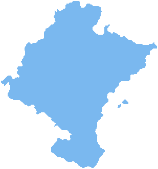
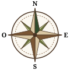
¡A SUBIR EL NÚMERO!
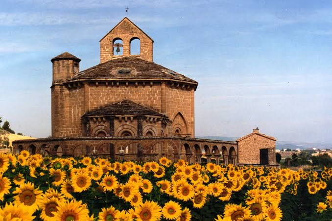
Todavía no hay excursiones en esta categoría.
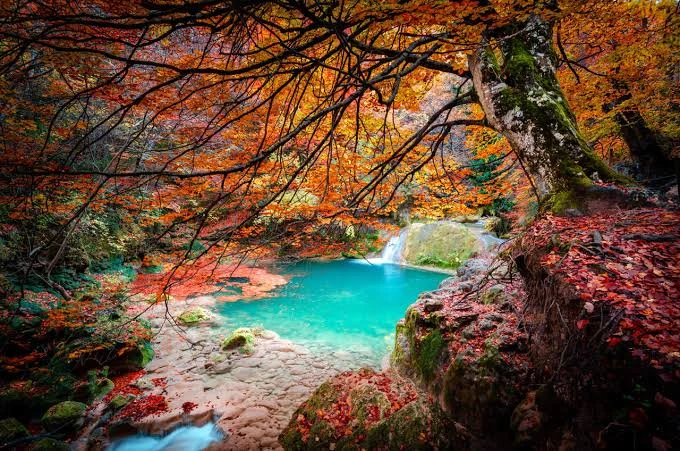
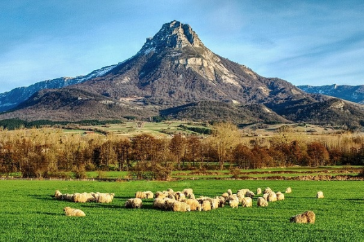
Todavía no hay excursiones en esta categoría.
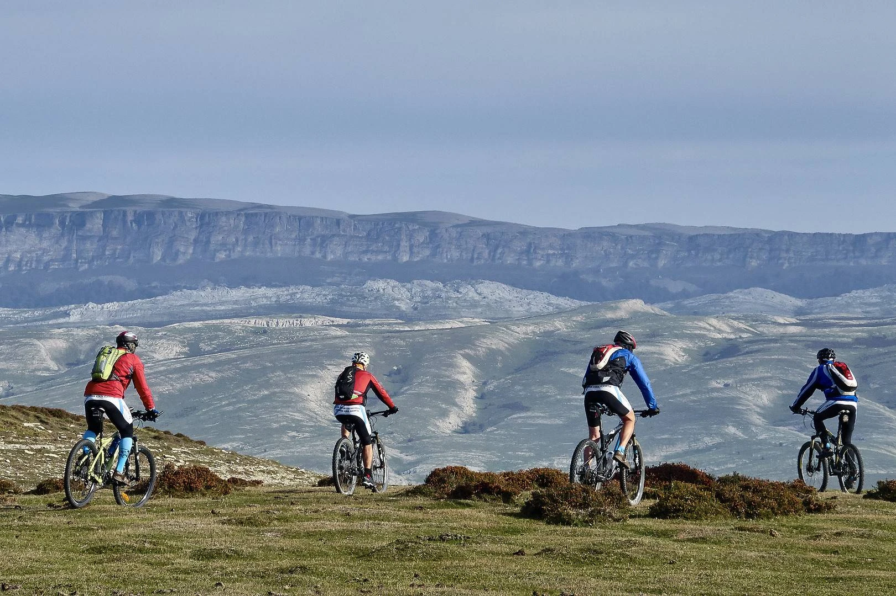
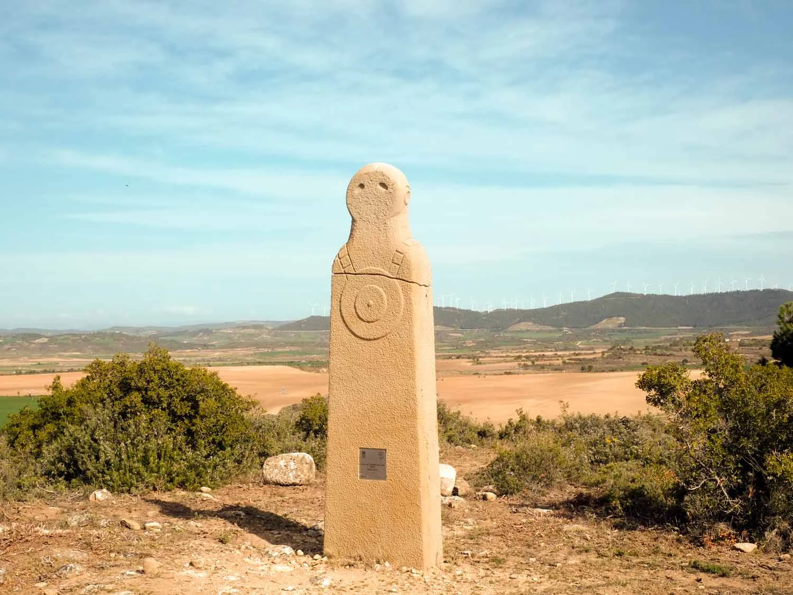
Todavía no hay excursiones en esta categoría.
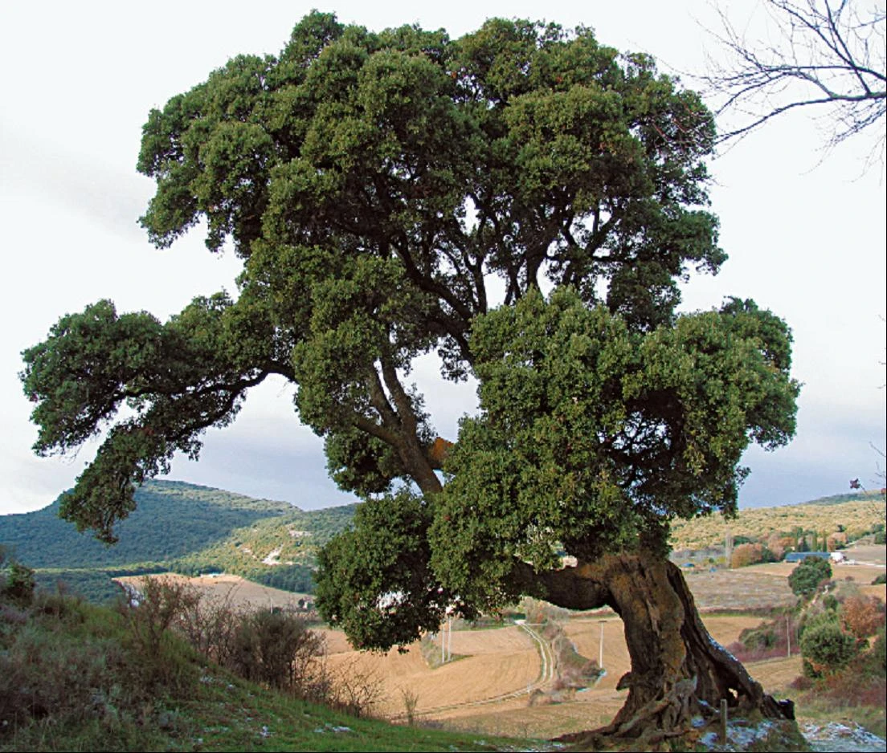
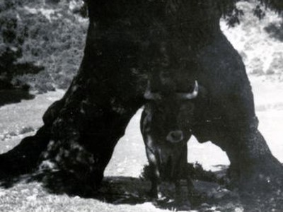
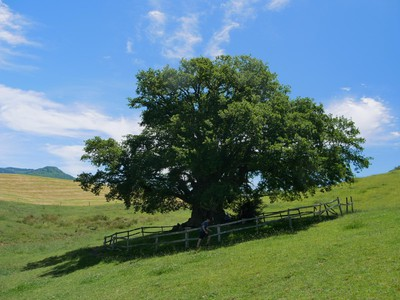
Todavía no hay excursiones en esta categoría.
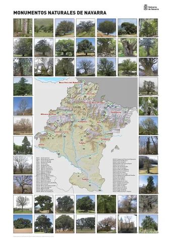
Bienvenido/a a la web oficial de La Lista de excursiones por Navarra y cercanías o lejanías. En esta web encontrarás todos los paseos, montes, montañas, pueblos y lugares que se deben conocer por la región. El objetivo de La Lista y de esta web es fomentar la total compleción de las excursiones a los puntos enumerados en ella. En caso de completarse, será oficial y legítimo decir que se conoce la zona de manera total y absoluta. Sin más que añadir, ¡suerte y disfrutad perdiéndoos en las aventuras y excursiones y caminos de Navarra y compañía!
«Ad Astra»
«Audentes fortuna iuvat»
CÓMO USAR LA WEB
- Busca la excursión que desees en la categoría correspondiente.
- Pincha en ella y observa sus datos de ruta, distancia a Pamplona en coche y ubicación en Google Maps.
- Si la excursión no tiene enlace a Wikiloc, no fiarse del kilometraje de la ruta; si lo tiene, mirarlo para la ruta.
- Ir a la excursión y hacerla.
- Marcarla como completada en esta web.
- Repetir.
WEBS INTERESANTES
- Monumentos Naturales de Navarra, por Javier Colomo Fichas, fotos, coordenadas y mapas de cada árbol ↗
- Rutas Navarra / Napar Bideak Buscador de rutas por zona, dificultad, distancia y desnivel ↗
- Navarrincón: excursiones para niños en Navarra Cuevas, cascadas, dólmenes y paseos para ir en familia ↗
- Mis escapadas por Navarra Listado completo de rutas senderistas ↗
- Rutas de Paisajes Enogastronómicos Las cinco rutas a pie o en bici del Gobierno de Navarra, en Visit Navarra ↗
- Visit Navarra Web oficial de turismo de Navarra ↗
TIEMPO: PREDICCIÓN 7 DÍAS
EL RELOJ DE SANFERMINES
Faltan para el chupinazo (6 de julio, 12:00)
¡Estamos en Sanfermines! ¡Gora San Fermín!
El reloj de San Fermín (sanfermin.com) Historia del reloj de la calle Estafeta ↗GUÍA DE CAMPO BÁSICA
ÁRBOLES: LAS 120 ESPECIES MÁS RELEVANTES
ROBLES Y ENCINAS (8)
-
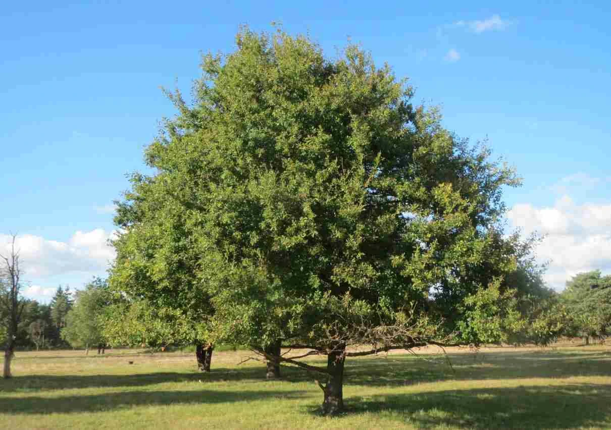
Roble común (o carballo)
Quercus robur
Gran roble de hoja caduca, con copa ancha y ramas gruesas y retorcidas. Sus hojas tienen lóbulos redondeados, casi no tienen rabillo y en la base forman dos pequeñas «orejitas». Las bellotas, en cambio, cuelgan de un rabillo largo. Prefiere suelos profundos y húmedos, y forma robledales en los valles atlánticos del norte de Navarra, a menudo en fondos de valle y junto a prados.
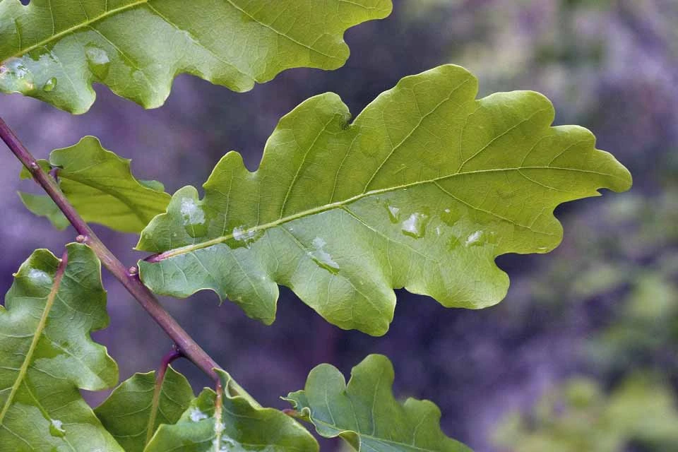
Hojas -
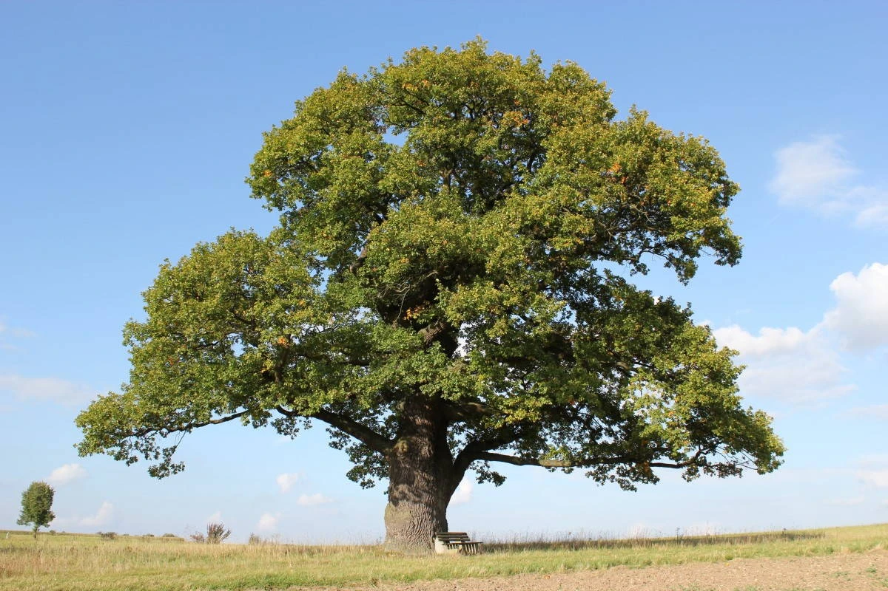
Roble albar
Quercus petraea
Muy parecido al roble común, pero al revés: sus hojas tienen un rabillo claro y la base en cuña, sin «orejitas», y las bellotas van casi pegadas a la rama, sin rabillo. Su tronco suele ser más recto. Prefiere laderas con suelos más sueltos y ácidos que el roble común, y forma robledales en los montes del norte de Navarra, a veces mezclado con el haya. Los dos se cruzan con facilidad, así que no siempre es fácil distinguirlos.
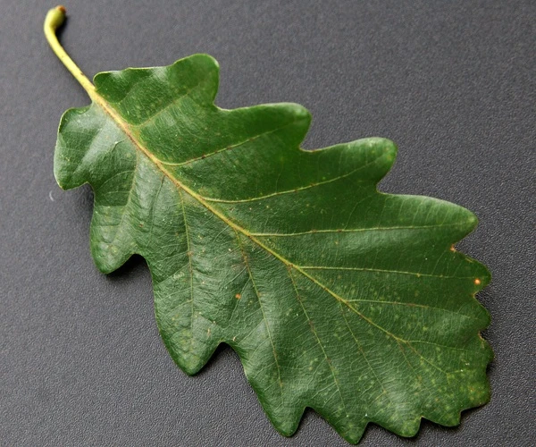
Hoja -
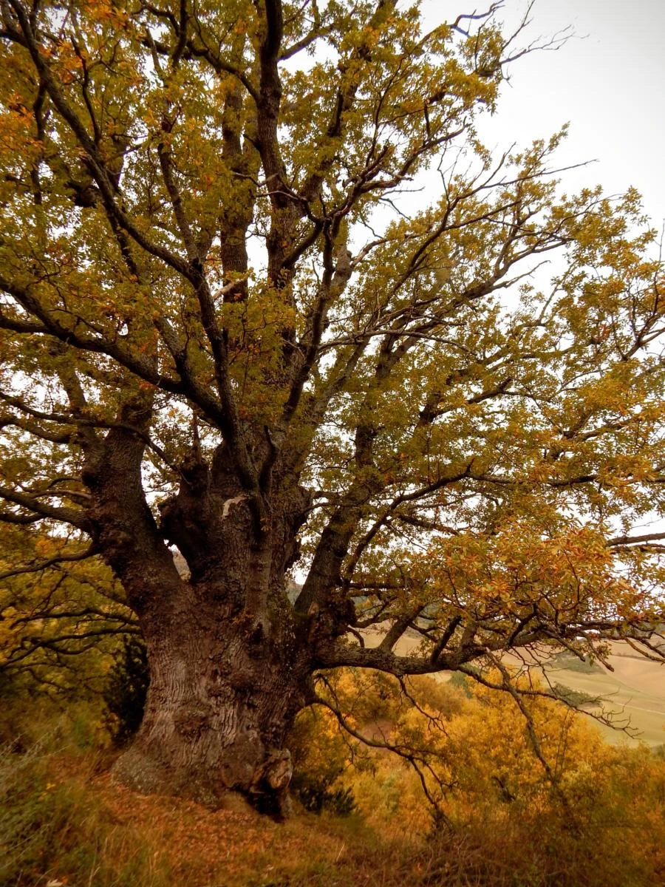
Roble pubescente
Quercus pubescens
Roble de tamaño mediano, de hojas lobuladas más pequeñas que las del roble común y cubiertas de pelillos suaves, sobre todo por debajo y en las ramillas jóvenes (de ahí su nombre). Aguanta bien la sequía y los suelos calizos, y forma robledales en laderas soleadas de la Zona Media y el Prepirineo, a menudo junto al quejigo y la encina. Se cruza con facilidad con otros robles, por lo que a veces cuesta distinguirlo. En invierno conserva muchas hojas secas en las ramas.
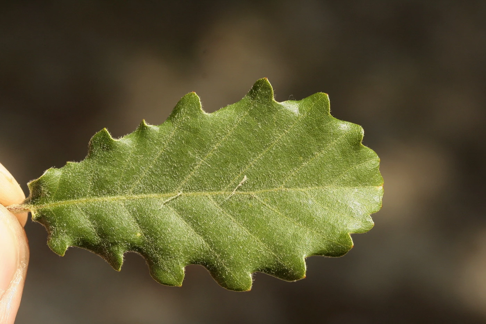
Hoja -
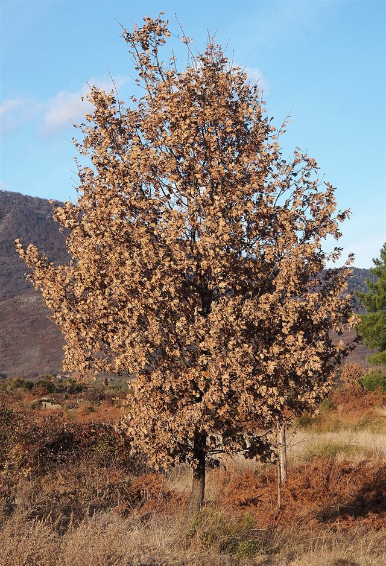
Foto: Luis Fernández García · CC BY-SA 4.0 · Wikimedia Commons Roble melojo (o rebollo)
Quercus pyrenaica
Roble de hoja caduca que se reconoce por sus hojas profundamente divididas en lóbulos estrechos, cubiertas de pelillos suaves, de tacto aterciopelado y color verde grisáceo, sobre todo por debajo. Brota tarde, ya entrada la primavera, y en otoño las hojas secas se quedan mucho tiempo en las ramas. Echa muchos brotes de raíz, por lo que a menudo forma bosquetes densos de árboles jóvenes. Prefiere suelos ácidos y sueltos; en Navarra es escaso y aparece en algunas zonas del norte y del oeste, en el límite de los robledales atlánticos.
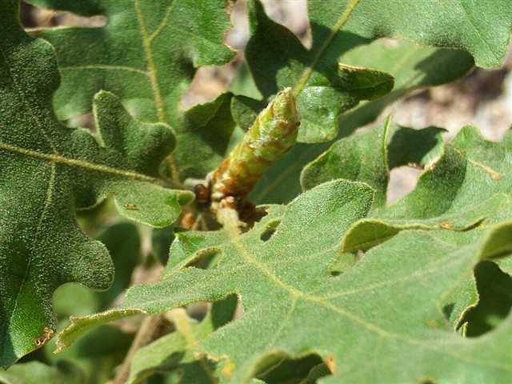
Hojas · Foto: Javier martin · Public domain · Wikimedia Commons -
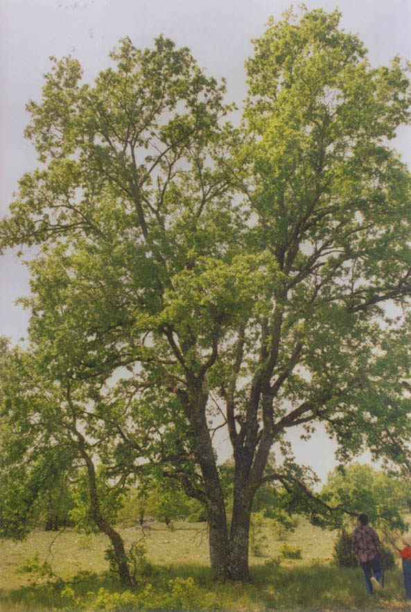
Foto: Carlosblh · CC BY-SA 3.0 · Wikimedia Commons Quejigo
Quercus faginea
Roble mediterráneo de hojas pequeñas y dentadas, verde grisáceo por debajo, que se secan en invierno pero se quedan en el árbol hasta la primavera. Frecuente en la Zona Media y el Prepirineo, entre los encinares y los robledales.
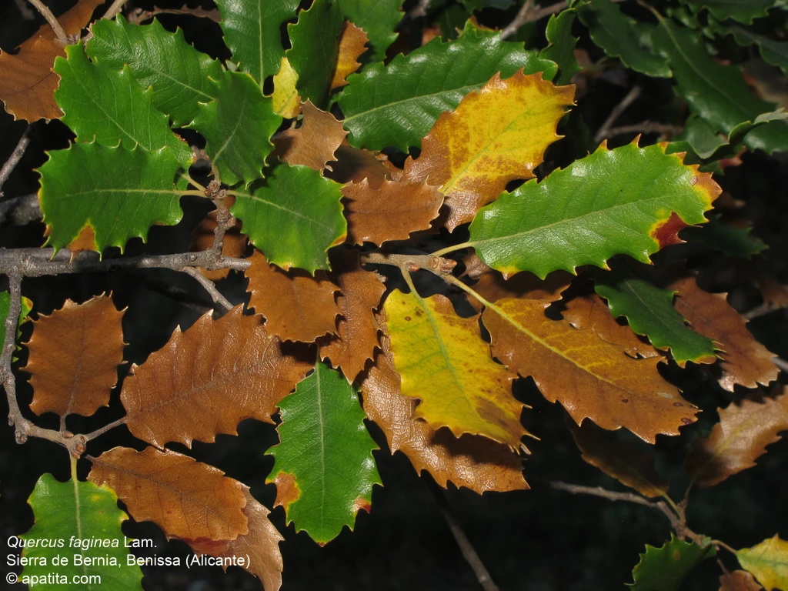
Hojas verdes y secas -
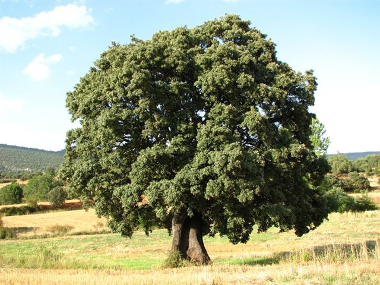
Foto: Picamaderos · CC BY-SA 3.0 · Wikimedia Commons Encina (o carrasca)
Quercus ilex
Árbol de hoja perenne, dura y pequeña, verde oscura por arriba y grisácea por debajo, a veces con el borde pinchudo. Aguanta muy bien la sequía y forma encinares en la Zona Media y la Ribera. Da bellotas.
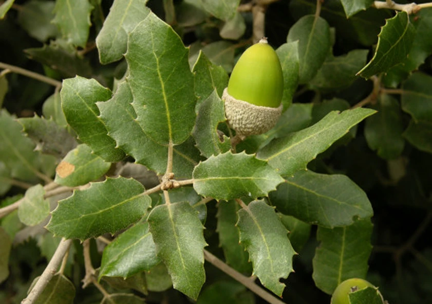
Hojas y bellota -
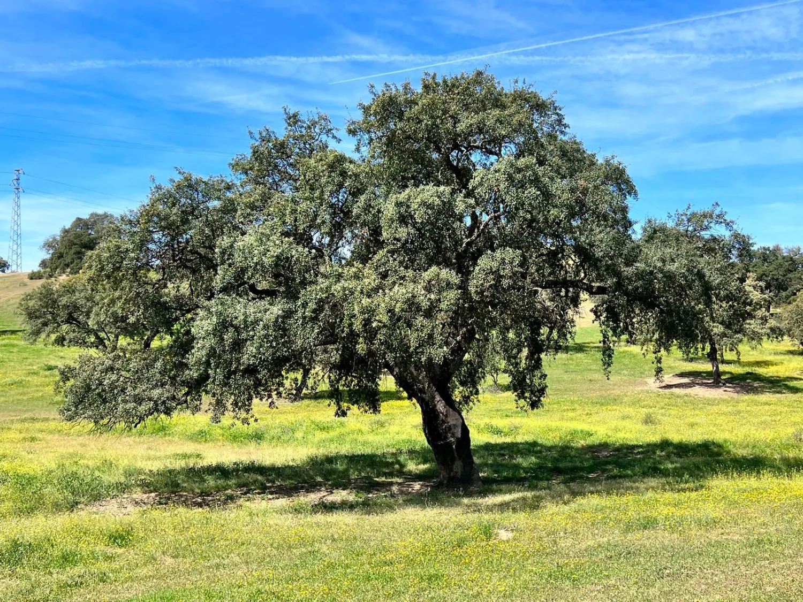
Alcornoque
Quercus suber
Pariente de la encina, también de hoja perenne: sus hojas son ovaladas, algo dentadas, verde oscuro por arriba y grisáceas y con pelillos por debajo. Se reconoce enseguida por su corteza, muy gruesa, blanda y agrietada: es el corcho, que se le quita cada nueve o diez años sin dañar el árbol, dejando el tronco desnudo de color rojizo. Da bellotas como la encina. Es un árbol del oeste y el sur de la península, de clima suave y suelos sin cal; en Navarra es muy raro y solo se ve algún ejemplar suelto o plantado.
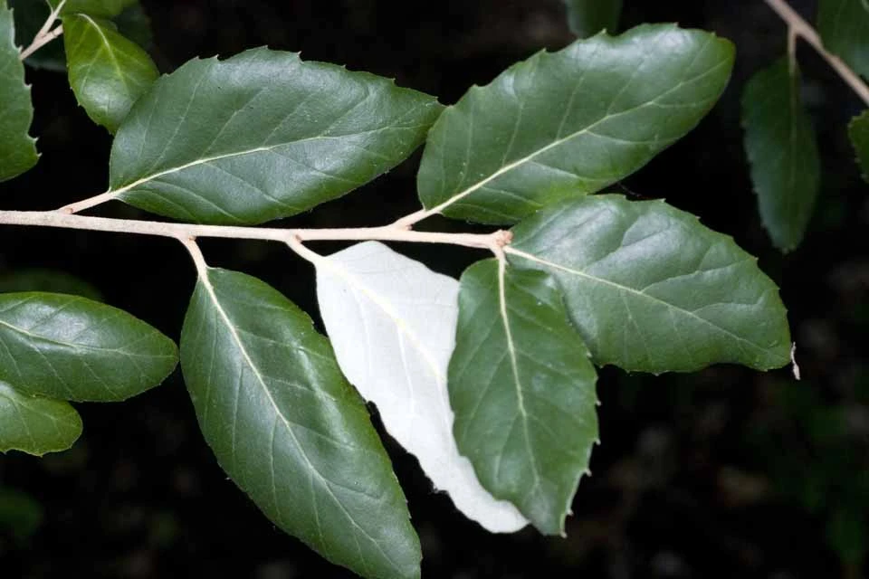
Hojas -
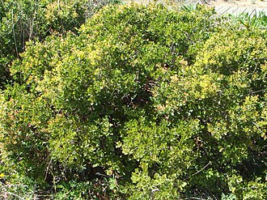
Coscoja
Quercus coccifera
La «encina enana»: un arbusto denso y enmarañado, casi nunca más alto que una persona, de la familia de las encinas y los robles. Sus hojas son pequeñas, duras, brillantes y verdes por las dos caras (no grisáceas por debajo como las de la encina), con el borde ondulado y lleno de pinchos. Sus bellotas tienen la cúpula cubierta de escamas rígidas y punzantes. Aguanta muy bien la sequía, el calor y el fuego, y forma coscojares en las laderas secas y pedregosas de la Ribera y las Bardenas, a menudo junto a romeros, sabinas y pinos carrascos.
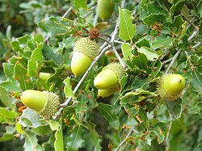
Hojas y bellotas
HAYAS Y OTROS ÁRBOLES DE BOSQUE (9)
-
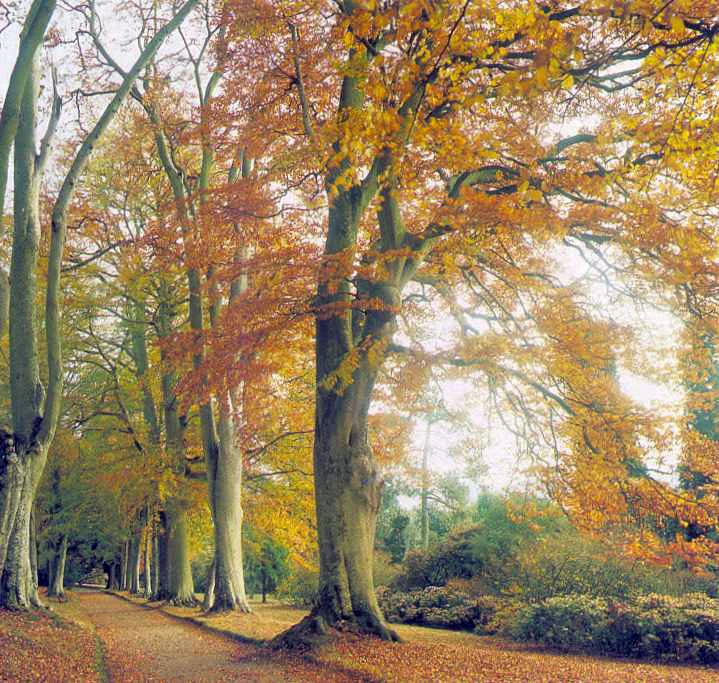
Haya
Fagus sylvatica
Tronco liso y gris plateado y hojas ovaladas de borde ondulado, que en otoño se vuelven cobrizas. Forma los hayedos húmedos y sombríos del norte de Navarra y del Pirineo, como Irati, Urbasa o Aralar. Su fruto es el hayuco.
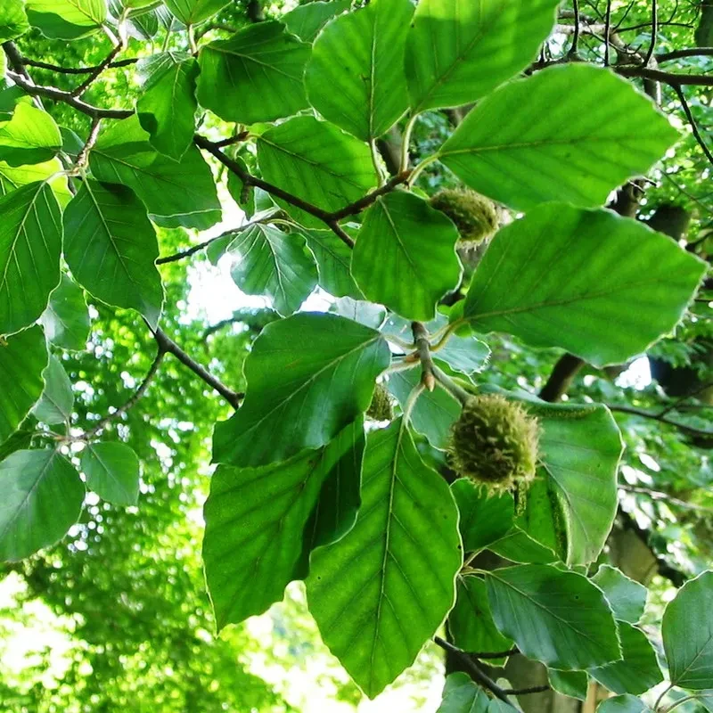
Hojas y hayucos -
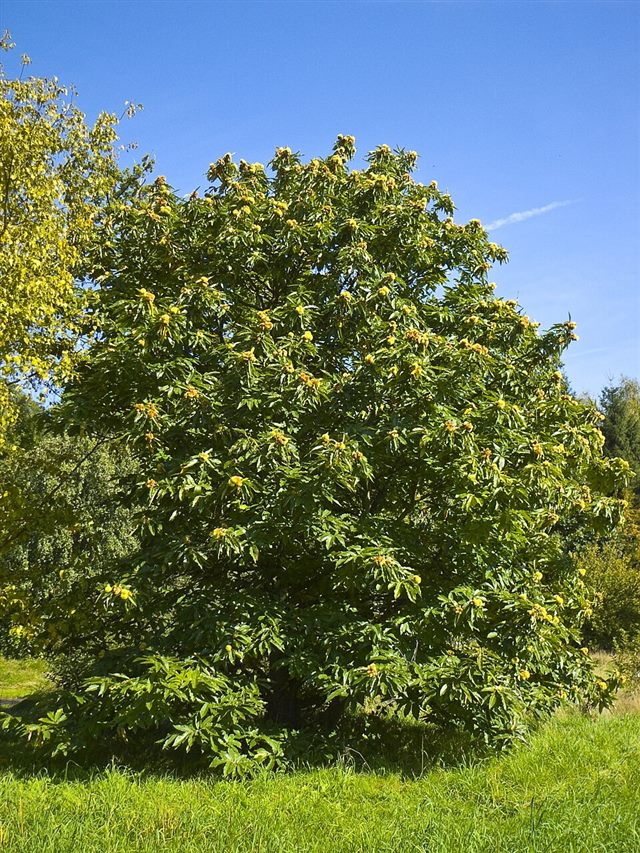
Foto: Willow · CC BY 2.5 · Wikimedia Commons Castaño
Castanea sativa
Hojas largas y estrechas con el borde en dientes de sierra. Su fruto, la castaña, crece dentro de un erizo lleno de pinchos. Prefiere suelos ácidos y húmedos: en Navarra se encuentra sobre todo en el norte, en Baztan, Bortziriak y Malerreka.
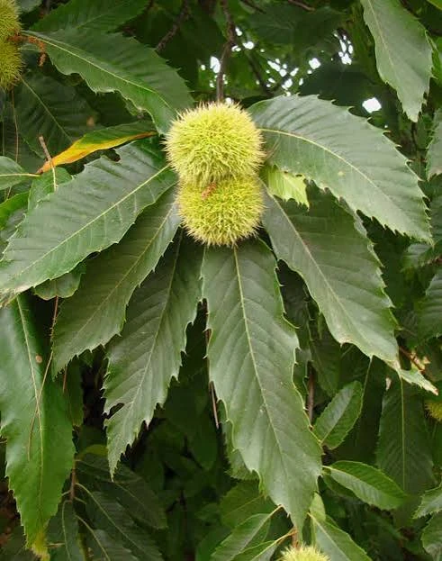
Hojas y erizos -
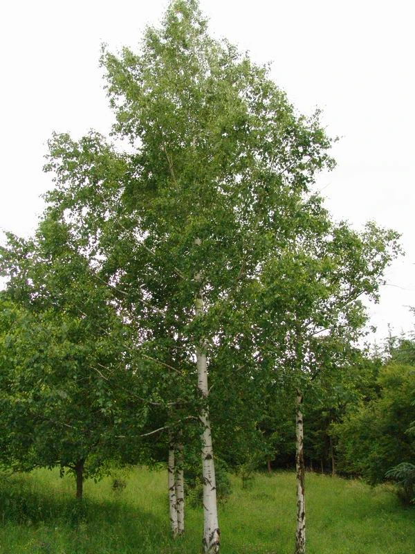
Abedul
Betula pendula
Árbol esbelto de corteza blanca con manchas negras, ramillas finas y colgantes y hojas pequeñas y triangulares que amarillean en otoño. Coloniza claros y bordes de bosque en las zonas frescas del norte de Navarra y del Pirineo.
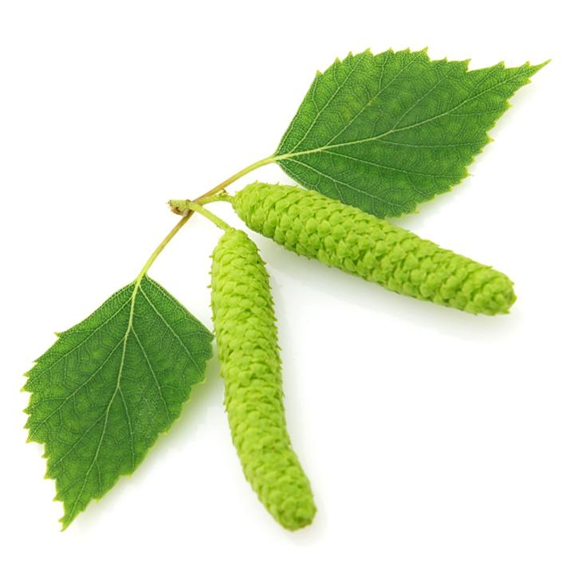
Hojas y amentos (flores) -
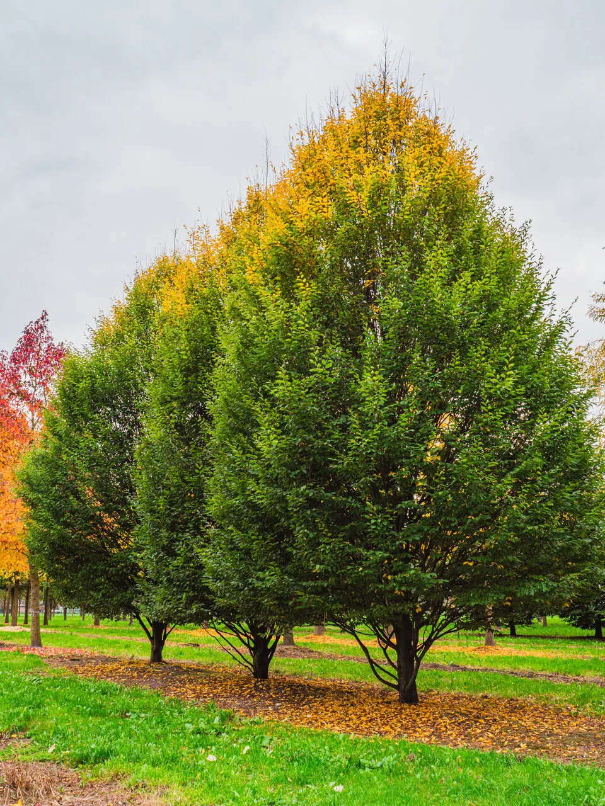
Carpe
Carpinus betulus
Árbol de tronco gris y liso, con surcos que parecen músculos. Sus hojas recuerdan a las del haya, pero tienen el borde doblemente dentado y los nervios muy marcados y paralelos. Los frutos cuelgan en racimos, cada uno con una hoja pequeña de tres lóbulos que les ayuda a volar. En Navarra es escaso: aparece en algunos bosques mixtos húmedos del norte y se planta en parques y setos.
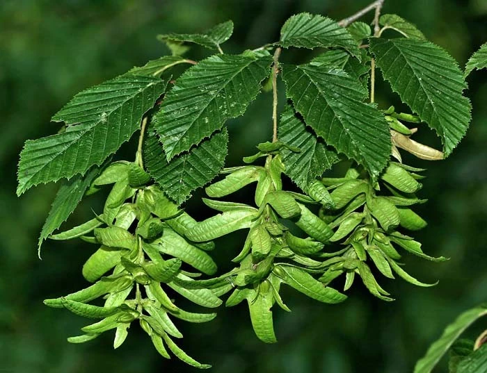
Hojas y frutos -
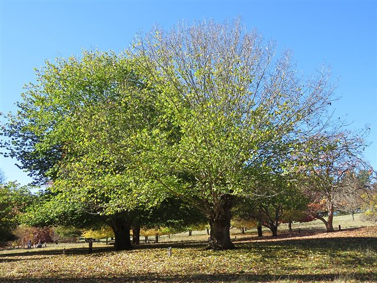
Foto: Calistemon · CC BY-SA 4.0 · Wikimedia Commons Olmo de montaña
Ulmus glabra
Olmo grande de los bosques de montaña, de copa ancha y hojas muy grandes (hasta 16 cm), ásperas como una lija por arriba, con el borde doblemente dentado y la base muy desigual, con un lado más largo que el otro; a veces la punta tiene tres picos. Sus frutos son sámaras redondas y planas con la semilla en el centro. Vive en bosques húmedos y barrancos frescos del norte de Navarra, junto a hayas, fresnos y tilos. Como el olmo común, ha sufrido mucho por la grafiosis, una enfermedad de los olmos.
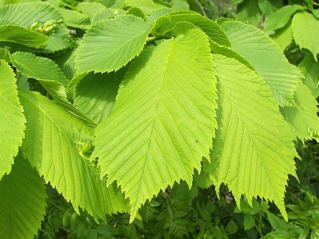
Hojas · Foto: Willow · CC BY 2.5 · Wikimedia Commons -
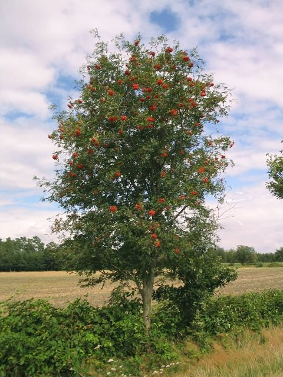
Foto: Field Researcher (Wikipedia en alemán) · Dominio público · Wikimedia Commons Serbal de cazadores
Sorbus aucuparia
Árbol pequeño de hojas compuestas, como plumas, con racimos de frutos rojo anaranjado a finales de verano y en otoño que atraen a las aves (de ahí su nombre: se usaban como cebo). Vive en los bosques de montaña del norte y del Pirineo, entre hayas y abetos.
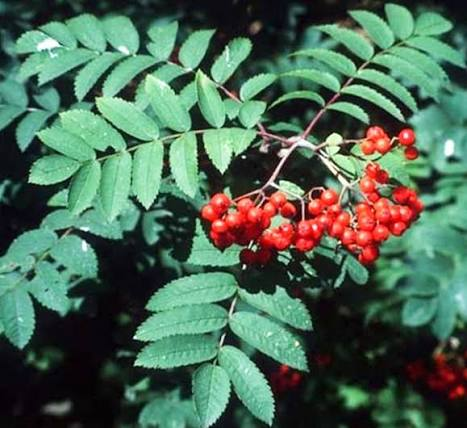
Hojas y frutos -
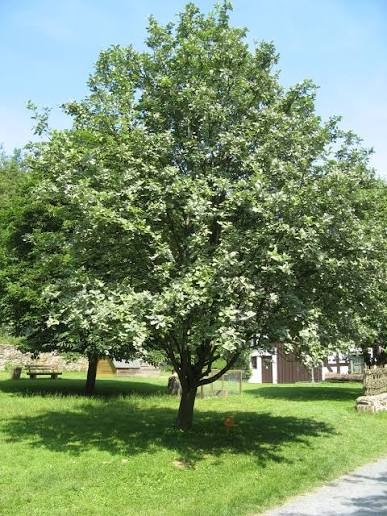
Mostajo (o serbal blanco)
Sorbus aria
Árbol mediano, pariente del serbal de cazadores pero de hojas enteras: ovaladas, dentadas, con los nervios marcados, verdes por arriba y blanquecinas y algodonosas por debajo, por lo que la copa brilla con el viento. En primavera da ramilletes de flores blancas y a finales de verano frutos rojos, como pequeñas manzanitas, que comen las aves. Crece disperso en hayedos, robledales, pinares y roquedos de montaña de toda la mitad norte de Navarra, sobre todo en suelos calizos.
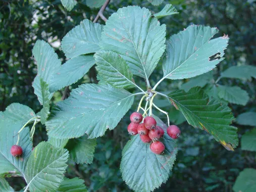
Hojas y frutos -
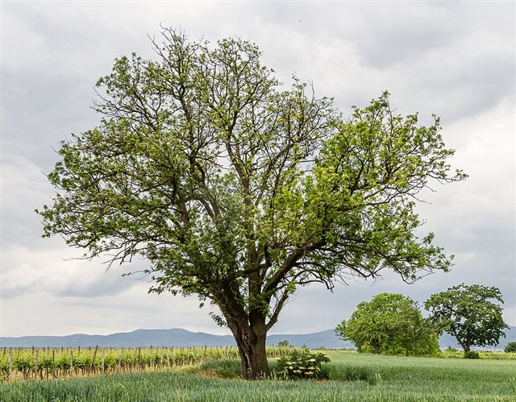
Foto: Friedrich Haag · CC BY-SA 4.0 · Wikimedia Commons Serbal común (o comestible)
Sorbus domestica
Árbol de hasta 15 o 20 m, de corteza parda y agrietada, con hojas compuestas de muchos foliolos dentados, como las del serbal de cazadores. En primavera da ramilletes de flores blancas, y en otoño las serbas, frutos como pequeñas peras o manzanas, verdes y rojizos, muy ásperos al cogerlos pero dulces y comestibles cuando se dejan madurar hasta que se ablandan. Se ha plantado en huertas y bordes de campos, y aparece salpicado en bosques y setos de la Zona Media de Navarra.
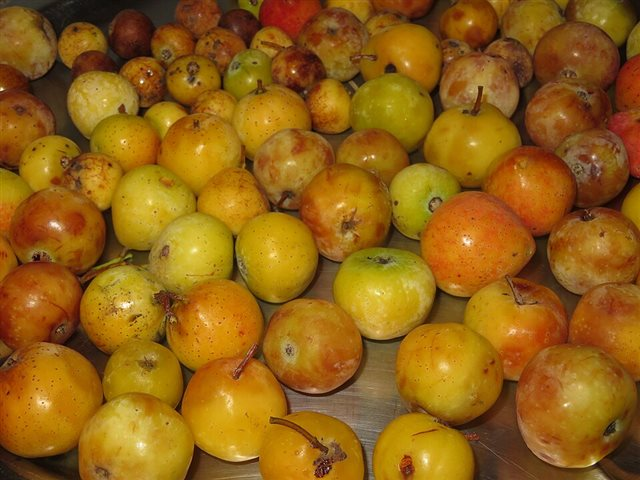
Frutos (serbas) · Foto: Juan Emilio Prades Bel · CC BY 4.0 · Wikimedia Commons -
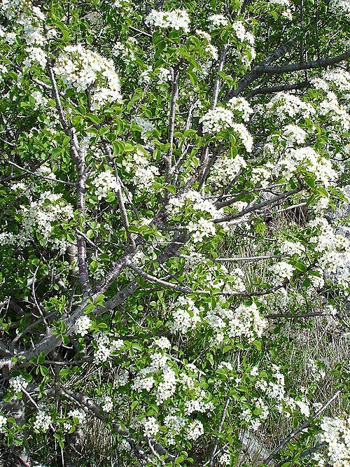
Foto: Jeantosti · CC BY-SA 3.0 · Wikimedia Commons Cerezo de Santa Lucía
Prunus mahaleb
Arbusto o arbolillo de hoja caduca, de hojas redondeadas, brillantes y finamente dentadas, y corteza que huele bien al rasparla. En primavera da ramilletes de pequeñas flores blancas muy perfumadas, y en verano frutos pequeños, como cerezas diminutas, que pasan del rojo al negro y son amargos. Aguanta bien la sequía y los suelos calizos: es frecuente en laderas secas, roquedos y bordes de carrascales y quejigales de la Zona Media y el Prepirineo de Navarra.
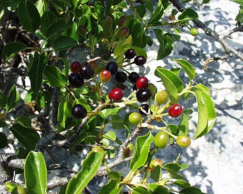
Frutos · Foto: Rasbak · Public domain · Wikimedia Commons
PINOS, ABETOS Y OTRAS CONÍFERAS (14)
-
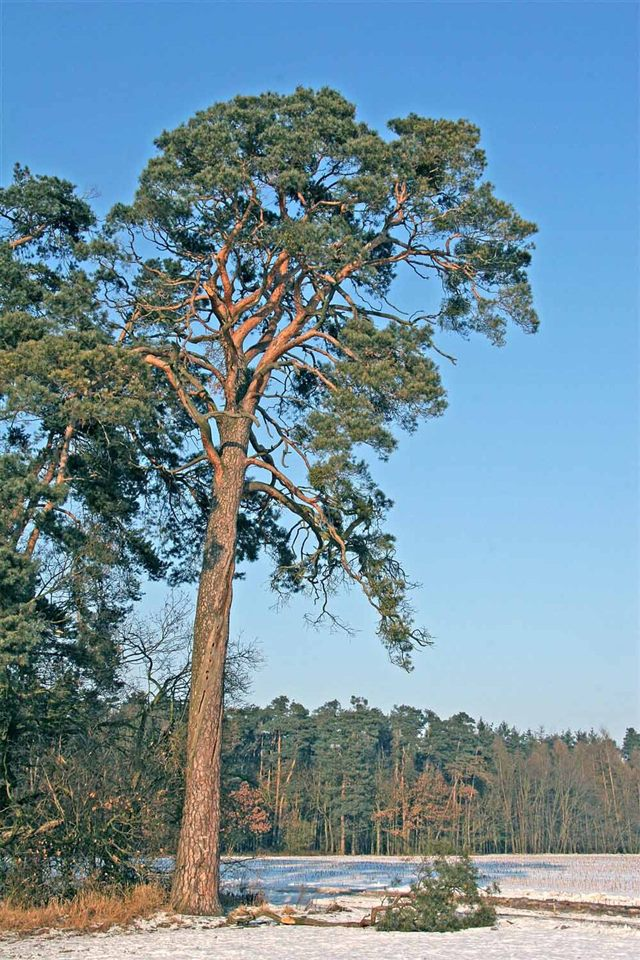
Foto: Zp (Wikipedia en checo) · CC BY-SA 3.0 · Wikimedia Commons Pino silvestre (o albar)
Pinus sylvestris
Se reconoce por la corteza anaranjada de la parte alta del tronco y las ramas. Sus acículas son cortas, van de dos en dos y tienen un tono verde azulado. Abunda en el Pirineo y en las sierras de la Zona Media, a menudo mezclado con hayas.
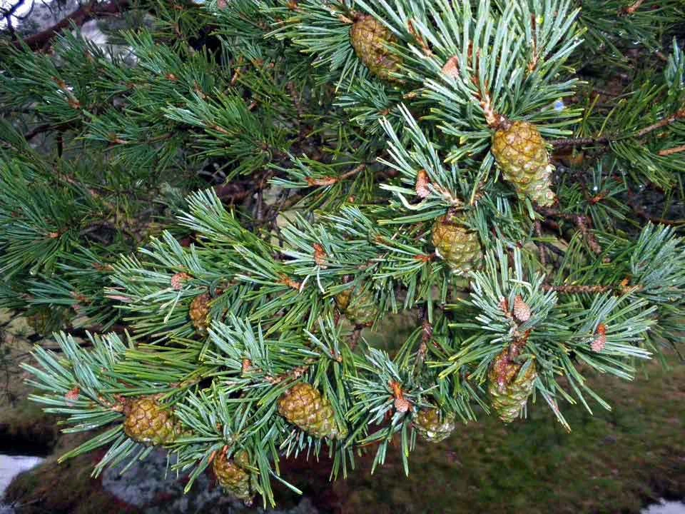
Acículas y piñas -
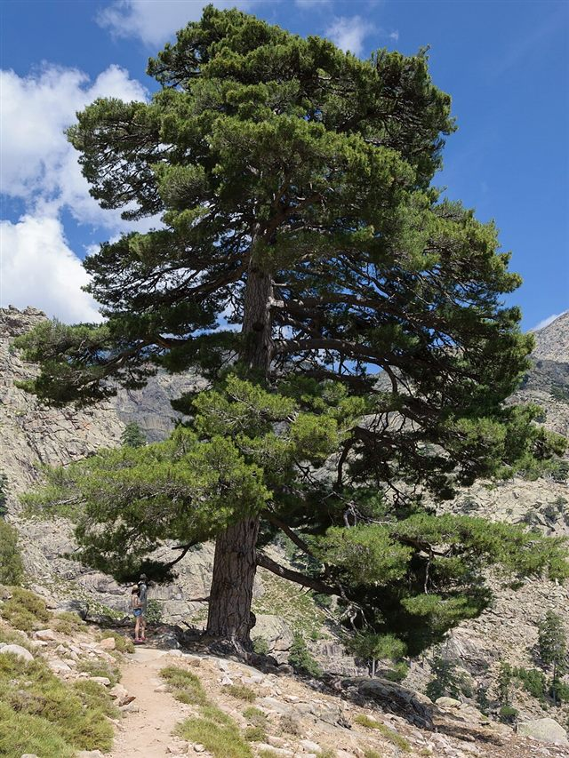
Foto: Myrabella · CC BY-SA 4.0 · Wikimedia Commons Pino laricio (o negral)
Pinus nigra
Pino de corteza gris oscura, agrietada en placas, y acículas largas, rígidas y de un verde muy oscuro. Vive en laderas calizas de montaña media y se ha plantado mucho en Navarra en repoblaciones.
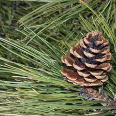
Piña y acículas -
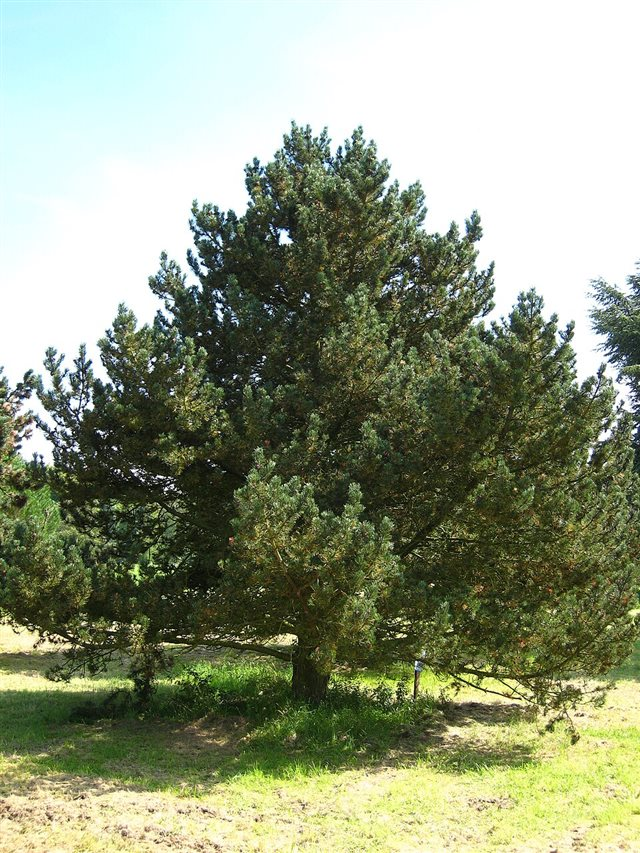
Foto: Matthieu Sontag (Mirgolth) · CC BY-SA 3.0 · Wikimedia Commons Pino negro
Pinus uncinata
El pino de la alta montaña: vive en el Pirineo por encima de los 1.600 o 1.700 m, hasta el límite del bosque, donde aguanta nieve, hielo y viento. En Navarra forma pinares en Larra-Belagua y la Mesa de los Tres Reyes, sobre roca caliza, y allí muchos ejemplares crecen retorcidos y achaparrados. Tiene la corteza gris oscura, agujas cortas (de 3 a 6 cm) de color verde oscuro, en parejas y muy apretadas, y piñas pequeñas cuyas escamas acaban en un gancho, de ahí su nombre científico (uncinata, «con ganchos»). No hay que confundirlo con el pino laricio o negral.
Piña · Foto: Matthieu Sontag (Mirgolth) · CC BY-SA 3.0 · Wikimedia Commons -
Foto: Accurimbono · CC BY-SA 3.0 · Wikimedia Commons Pino carrasco
Pinus halepensis
Pino mediterráneo de copa clara e irregular, corteza gris y acículas finas de verde claro. Es el pino que mejor soporta la sequía y el calor: típico del sur de Navarra, la Ribera y las Bardenas.
Acículas y piña -
Foto: WikiCecilia · CC BY-SA 4.0 · Wikimedia Commons Abeto blanco
Abies alba
Conífera alta de copa cónica. Sus acículas son planas, con dos líneas blancas por debajo, y sus piñas crecen hacia arriba sobre las ramas. En Navarra vive en el Pirineo (Irati, Roncal, Belagua), a menudo mezclado con hayas.
Ramas y piñas -
Picea serbia (o pícea de Serbia)
Picea omorika
Conífera de hoja perenne y silueta muy estrecha y alargada, en forma de huso, con ramas cortas que se curvan hacia arriba en las puntas. Sus hojas son agujas cortas y aplanadas, verde oscuro por arriba y con dos franjas blanquecinas por debajo, lo que le da un aire plateado. Sus piñas cuelgan de las ramas y son pequeñas, alargadas y de color morado cuando están jóvenes. Es originaria de las montañas de Serbia y Bosnia, donde es muy rara; en Navarra solo se ve plantada en parques y jardines.
Agujas y piña Brotes nuevos -
Foto: DIMSFIKAS (Wikipedia en griego) · CC BY-SA 3.0 · Wikimedia Commons Cedro (del Líbano)
Cedrus libani
Conífera de gran porte con las ramas extendidas en pisos horizontales, acículas cortas agrupadas en rosetas y piñas erguidas en forma de barril. No es autóctono: se plantó en jardines y palacios. El Cedro de Bértiz es Monumento Natural.
Acículas y piñas -
Secuoya (gigante)
Sequoiadendron giganteum
Conífera de California que alcanza tamaños enormes, con la corteza rojiza, gruesa y esponjosa y la copa cónica. En Navarra solo está plantada en parques y jardines; la del Palacio de Navarra, en Pamplona, es Monumento Natural.
Hojas y piña -
Foto: Wojsyl · CC BY-SA 3.0 · Wikimedia Commons Ciprés
Cupressus sempervirens
Conífera de copa estrecha y alargada, como una llama, con hojitas en forma de escama y piñas redondas. No es autóctona de Navarra: se planta en cementerios, ermitas y jardines.
Hojas y piñas (gálbulos) -
Foto: AndyScott · CC BY-SA 4.0 · Wikimedia Commons Pino de Wollemi
Wollemia nobilis
Conífera de hoja perenne, con ramas largas y algo colgantes y hojas planas, de color verde oscuro, en dos o cuatro filas a lo largo de la ramilla. Su corteza parece cubierta de burbujas de chocolate. Es uno de los árboles más raros del mundo: solo se conocía por fósiles de hace millones de años hasta que en 1994 se encontraron menos de cien ejemplares silvestres en un cañón escondido del Parque Nacional de Wollemi, en Australia. Desde entonces se reproduce en viveros y se planta en jardines botánicos de todo el mundo para salvarlo; en Pamplona hay uno en el campus de la Universidad Pública de Navarra (UPNA).
Piña · Foto: Velela · CC BY-SA 3.0 · Wikimedia Commons -
Tejo
Taxus baccata
Conífera de crecimiento muy lento que puede vivir cientos de años. Sus hojas son agujas planas y blandas, verde oscuro, en dos filas a los lados de la ramilla. No da piñas: cada semilla está rodeada por una envoltura roja y carnosa. Todo el árbol es muy tóxico, salvo esa envoltura roja. En Navarra crece disperso en hayedos y barrancos sombríos del norte y del Pirineo, y está protegido.
Hojas y fruto -
Enebro (común)
Juniperus communis
Arbusto o arbolillo de la familia de los cipreses, de hojas en forma de aguja corta, rígidas y pinchudas, agrupadas de tres en tres, con una franja blanca por encima. Sus «bayas» son en realidad pequeñas piñas carnosas que tardan dos años en madurar: primero verdes y luego azul oscuro; con ellas se aromatiza la ginebra. Es muy común en pastos, claros de bosque y laderas pedregosas de montaña de toda Navarra, desde la Zona Media hasta el Pirineo.
Hojas y bayas -
Sabina (albar)
Juniperus thurifera
Conífera de la familia de los enebros y los cipreses, de copa densa y tronco grueso, retorcido y de corteza gris que se deshace en tiras. Sus hojas son escamitas diminutas pegadas a las ramillas, y sus frutos, unas bolitas carnosas que maduran de verde a azul oscuro o negro. Vive muchos siglos y aguanta el frío y la sequía extremos de las parameras. En Navarra es muy escasa; la sabina más común es la sabina negral (Juniperus phoenicea), más pequeña y de bayas rojizas, en las Bardenas, la Ribera y las foces.
Hojas y bayas -
Foto: Xemenendura · CC BY-SA 3.0 · Wikimedia Commons Sabina negral
Juniperus phoenicea
Arbusto o arbolillo de hoja perenne y copa densa, con las hojas diminutas en forma de escamas, pegadas a las ramillas, como las del ciprés. Sus frutos son bayas redondas (gálbulos) que pasan del verde al rojo oscuro brillante al madurar, a los dos años. Aguanta como pocos la sequía, el calor y los suelos pobres: es la sabina típica de la Ribera y las Bardenas Reales, donde crece en cerros, cortados y laderas de yeso y caliza junto a la coscoja, el romero y el pino carrasco.
Hojas y frutos · Foto: Teresa Grau Ros from Barcelona · CC BY-SA 2.0 · Wikimedia Commons
ARCES (9)
-
Arce blanco (o mayor)
Acer pseudoplatanus
Árbol grande de hojas anchas con cinco lóbulos, parecidas a las del plátano de sombra, y frutos con dos alas que caen girando como hélices. Vive en bosques frescos y húmedos del norte de Navarra y del Pirineo, a menudo con hayas y fresnos, y también se planta en paseos.
Hojas -
Foto: Basotxerri · CC BY-SA 4.0 · Wikimedia Commons Arce menor
Acer campestre
Arce pequeño, a veces casi un arbusto, de hojas pequeñas con lóbulos redondeados que en otoño se vuelven amarillas. Sus frutos alados forman casi una línea recta. Es común en setos, linderos y bosques mixtos de la Zona Media y del norte.
Hojas y frutos -
Arce de Montpellier
Acer monspessulanum
Arce pequeño, a veces casi un arbusto, de hojas pequeñas, duras y de tres lóbulos redondeados, con el rabillo rojizo. Sus frutos tienen las dos alas casi paralelas y a menudo rojizas. Aguanta bien la sequía y el calor: en Navarra crece en laderas soleadas, roquedos calizos y foces de la Zona Media y el Prepirineo, entre quejigos y encinas.
Hojas -
Foto: Liné1 · CC BY-SA 3.0 · Wikimedia Commons Arce de hoja de ópalo (o azcarro)
Acer opalus
Arce de tamaño mediano, con hojas de cinco lóbulos poco profundos y redondeados, más anchas que largas, de color verde por arriba y algo más claras por debajo. A principios de la primavera, antes que las hojas, salen racimos colgantes de flores amarillas, y luego los frutos alados (sámaras) típicos de los arces. En otoño se vuelve amarillo y naranja. Es el arce de los barrancos, cortados y laderas pedregosas de roca caliza de la Zona Media y el Prepirineo de Navarra, junto al quejigo, el boj y el mostajo.
Corteza · Foto: Agnieszka Kwiecień, Nova · CC BY-SA 4.0 · Wikimedia Commons -
Foto: Jovo26 · CC BY-SA 4.0 · Wikimedia Commons Arce negundo
Acer negundo
Un arce distinto a los demás: sus hojas no tienen la forma típica de mano, sino que están divididas en tres o cinco foliolos, como las de un fresno. Las ramas jóvenes son verdes, a veces cubiertas de un polvillo blanquecino. Como todos los arces, da frutos alados (sámaras) en parejas, que cuelgan en racimos. Viene de Norteamérica; se plantó en calles y parques, pero se ha asilvestrado y se ha vuelto invasor en las riberas de los ríos de Navarra, como el Ebro, el Arga o el Aragón.
Frutos · Foto: Olga Aleksandra · CC BY 4.0 · Wikimedia Commons -
Arce azucarero
Acer saccharum
Arce de Norteamérica de cuya savia se hace el sirope de arce; su hoja, de cinco lóbulos en punta, es la que aparece en la bandera de Canadá. Es famoso por su color en otoño, cuando la copa se vuelve naranja, roja o amarilla intensa. En Navarra solo se ve plantado en parques y jardines.
Hojas en otoño Frutos alados (sámaras) -
Arce plateado
Acer saccharinum
Arce de Norteamérica, de crecimiento muy rápido, muy plantado en parques y avenidas. Sus hojas tienen cinco lóbulos estrechos y muy recortados, verdes por arriba y blanco plateado por debajo, de modo que la copa brilla cuando sopla el viento. En otoño se vuelven amarillas. Sus ramas son frágiles y se rompen con facilidad.
Hojas -
Arce japonés
Acer palmatum
Arbolillo ornamental de Japón y Corea, de hojas pequeñas y finas con cinco a siete lóbulos en punta, como una mano abierta. Hay variedades de hoja verde y de hoja roja, y en otoño toma tonos rojos o naranjas muy vivos. Se planta mucho en jardines y parques.
Hojas -
Liquidámbar
Liquidambar styraciflua
No es un arce: va en este grupo solo por el parecido de sus hojas. Árbol ornamental de Norteamérica, muy plantado en parques y calles por su color en otoño, cuando la copa se vuelve roja, naranja y morada a la vez. Sus hojas en forma de estrella de cinco puntas se parecen a las de los arces, pero van alternas en la rama, no enfrentadas por parejas. Se distingue enseguida por sus frutos: bolas pinchudas que cuelgan de un rabillo largo y quedan en el árbol en invierno.
Hojas y frutos
ÁRBOLES DE RIBERA (10)
-
Chopo (o álamo negro)
Populus nigra
Árbol de ribera alto y de crecimiento rápido, con hojas triangulares que tiemblan con el viento. Acompaña a ríos como el Ebro, el Aragón o el Arga. En primavera suelta una pelusa blanca que lleva sus semillas.
Hojas y frutos -
Foto: La la means I love you · CC BY-SA 3.0 · Wikimedia Commons Álamo blanco
Populus alba
Árbol de ribera de corteza blanquecina y hojas verdes por arriba y blancas y algodonosas por debajo, que hacen brillar la copa con el viento. Es frecuente en los sotos del Ebro, el Aragón y la Ribera. Los Álamos de Lodosa son Monumento Natural.
Hojas -
Álamo temblón
Populus tremula
Álamo esbelto de corteza lisa, gris verdosa o blanquecina. Sus hojas son casi redondas, con el borde ondulado y un rabillo largo y aplanado, por lo que tiemblan y susurran con la menor brisa: de ahí su nombre. En otoño se vuelven de un amarillo intenso. A diferencia de otros álamos, no necesita estar junto al río: crece en claros y bordes de hayedos, robledales y pinares de montaña del norte y del Pirineo de Navarra, a menudo en grupos que brotan de sus raíces.
Hojas -
Sauce (blanco)
Salix alba
Árbol de ribera de hojas largas y estrechas, verdes por arriba y plateadas por debajo, que dan a la copa un brillo blanquecino. Sus ramas son muy flexibles. Crece junto a ríos y acequias de toda Navarra, a menudo junto a los chopos.
Hojas -
Foto: W.carter · CC0 · Wikimedia Commons Sauce cabruno
Salix caprea
Sauce arbustivo o arbolillo de hojas anchas y ovaladas, no estrechas como las de los otros sauces, arrugadas, verdes por arriba y grisáceas y algodonosas por debajo. A finales del invierno, antes que las hojas, se cubre de amentos: en las plantas macho son bolitas plateadas y sedosas que luego se vuelven amarillas de polen, muy importantes para las abejas tras el invierno. A diferencia de otros sauces, no necesita estar junto al agua: vive en claros, bordes de bosque y cunetas del norte de Navarra.
Amentos (flores) · Foto: Didier Descouens · CC BY-SA 4.0 · Wikimedia Commons -
Aliso
Alnus glutinosa
Árbol de ribera de corteza oscura y hojas redondeadas, con la punta roma o algo hundida y el borde dentado; de jóvenes son algo pegajosas. Sus frutos son unas piñitas leñosas pequeñas y negras que se quedan en el árbol todo el invierno. Siempre vive con los pies en el agua: forma alisedas a lo largo de ríos y arroyos de aguas limpias, sobre todo en el norte de Navarra. Sus raíces sujetan las orillas y enriquecen el suelo, y su madera aguanta mucho tiempo sumergida.
Hoja Frutos (piñitas) -
Foto: Brian Green · CC BY-SA 2.0 · Wikimedia Commons Fresno común (o europeo)
Fraxinus excelsior
Árbol alto de corteza gris y hojas compuestas de 9 a 13 foliolos anchos y dentados; en invierno se reconoce enseguida por sus yemas negras como el carbón. Sus frutos son sámaras alargadas que cuelgan en racimos y se quedan en el árbol en invierno. Le gustan los suelos húmedos y frescos: orillas de ríos, prados, setos y bosques del norte de Navarra, donde se ha podado mucho «en cabeza» para dar hoja como forraje al ganado.
Hojas y frutos (sámaras) -
Foto: Luis Fernández García · CC BY-SA 4.0 · Wikimedia Commons Fresno de hoja estrecha
Fraxinus angustifolia
El fresno del sur y de las zonas más secas. Se distingue del fresno común por sus foliolos más estrechos y alargados, en forma de lanza, con el borde de dientes finos, y por sus yemas pardas, no negras. Soporta mejor el calor y la sequía del verano, siempre que tenga agua cerca. En Navarra vive en sotos y orillas de ríos de la Zona Media y la Ribera, en el Ebro, el Aragón o el Arga, y es el fresno que se ve en los pueblos del sur.
Hojas · Foto: Javier martin · Public domain · Wikimedia Commons -
Olmo (común)
Ulmus minor
Árbol de hojas dentadas con la base claramente asimétrica (un lado más largo que el otro). En primavera, antes que las hojas, salen sus frutos: pequeñas alas redondas con la semilla en el centro. Fue el árbol de las plazas, caminos y riberas de los pueblos, pero desde los años ochenta la grafiosis, una enfermedad causada por un hongo, mató casi todos los olmos grandes; hoy se ve sobre todo como rebrotes y arbolillos en setos y orillas.
Hojas Frutos (sámaras) -
Foto: Christian Ferrer · CC BY-SA 3.0 · Wikimedia Commons Tamariz (o taray)
Tamarix gallica y otras
Arbusto o arbolillo de ramas largas, finas y flexibles, de color rojizo, con hojas diminutas en forma de escama que le dan un aspecto plumoso, parecido al de un ciprés pero de hoja caduca. En primavera y verano se cubre de espigas de flores pequeñas de color rosa o blanco. Aguanta la sal, el calor y la sequía, siempre que tenga agua en el suelo: en Navarra forma tarayales en las orillas del Ebro, el Aragón y el Arga, y en barrancos y saladares de las Bardenas Reales.
Flores · Foto: Christian Ferrer · CC BY 4.0 · Wikimedia Commons
OTROS ÁRBOLES DE HOJA CADUCA (12)
-
Tilo de hoja grande
Tilia platyphyllos
El tilo más común en los bosques de Navarra. Árbol grande de copa amplia, con hojas en forma de corazón, de 6 a 12 cm, con pelillos suaves por debajo y blanquecinos en el ángulo de los nervios. A principios del verano da flores amarillentas muy perfumadas, en grupos de dos a cinco que cuelgan de una lengüeta alargada, y con ellas se prepara la tila; los frutos son bolitas duras con costillas marcadas. Crece en bosques frescos, barrancos y pies de cantil, sobre todo en el norte y la Zona Media, y se planta en plazas y paseos.
Hojas y frutos -
Foto: Юрий Д.К. · CC BY 4.0 · Wikimedia Commons Tilo de hoja pequeña
Tilia cordata
Muy parecido al tilo de hoja grande, pero con las hojas más pequeñas (de 3 a 7 cm), lisas por los dos lados salvo unos mechones de pelos rojizos en el ángulo de los nervios por debajo, que se ve azulada. Florece algo más tarde, con más flores en cada racimo (de cinco a diez), y sus frutos son bolitas casi lisas, sin costillas. En Navarra es mucho más raro como silvestre: aparece salpicado en bosques frescos del norte. Se planta mucho en calles y parques, igual que los tilos híbridos entre las dos especies.
Hojas · Foto: JoJan · CC BY-SA 3.0 · Wikimedia Commons -
Foto: Martinus KE · CC BY-SA 4.0 · Wikimedia Commons Tilo plateado
Tilia tomentosa
Tilo de copa grande y regular, fácil de reconocer cuando sopla el viento: sus hojas, en forma de corazón, son verde oscuro por arriba y blancas plateadas y aterciopeladas por debajo, y el árbol entero parece cambiar de color. Florece a mediados del verano, más tarde que los otros tilos, con flores muy perfumadas. Viene del sureste de Europa y Turquía y no es nativo de Navarra, pero se planta en calles, plazas y parques de Pamplona y otras ciudades porque aguanta bien el calor y la sequía.
Hojas y frutos · Foto: Martinus KE · CC BY-SA 4.0 · Wikimedia Commons -
Foto: AnRo0002 · CC0 (dominio público) · Wikimedia Commons Nogal
Juglans regia
Árbol de copa ancha y redondeada con hojas compuestas que huelen al frotarlas. Su fruto es la nuez, dentro de una cáscara verde. Se ha plantado desde antiguo junto a casas, huertas y caminos; los nogales de Garde y de Mélida son Monumentos Naturales.
Hojas y nueces Nueces maduras -
Foto: Ryan Hodnett · CC BY-SA 4.0 · Wikimedia Commons Almez (o lodoño)
Celtis australis
Árbol de copa ancha y redondeada, de corteza gris y lisa como la de una haya. Sus hojas son alargadas, con la punta muy fina y alargada, el borde dentado y tacto áspero por arriba. Sus frutos son bolitas pequeñas, del tamaño de un guisante, que pasan del verde al negro y tienen una pulpa fina y dulce que comen pájaros y niños. Es autóctono del sur de Navarra, en sotos y barrancos de la Ribera, y se planta mucho en calles, plazas y paseos porque da muy buena sombra y aguanta el calor.
Hojas y frutos · Foto: DiHri · CC BY-SA 3.0 · Wikimedia Commons -
Castaño de Indias
Aesculus hippocastanum
Árbol ornamental de copa grande y redondeada, originario de los Balcanes, muy plantado en parques, paseos y plazas. Sus hojas son grandes y palmeadas, con cinco a siete folíolos como los dedos de una mano, y en primavera se cubre de racimos erguidos de flores blancas. Sus castañas, brillantes y dentro de un erizo de pinchos cortos, no son comestibles: son tóxicas. No es pariente del castaño.
Hoja, erizo y castañas -
Plátano de sombra (o platanero de ciudad)
Platanus × hispanica
El árbol de las calles y paseos: hojas grandes parecidas a las del arce, corteza que se desprende en placas y deja manchas verdes y grises, y frutos en bolitas colgantes. Se planta mucho en ciudades como Pamplona por la sombra que da.
Corteza y hojas Hoja y frutos -
Falsa acacia (o robinia)
Robinia pseudoacacia
Árbol de tamaño mediano, de corteza gruesa y muy agrietada y ramas con pares de espinas. Sus hojas están formadas por muchas hojitas ovaladas a los dos lados de un eje. En primavera se cubre de racimos colgantes de flores blancas y olorosas, muy buscadas por las abejas, y después da vainas aplanadas de color pardo rojizo. Viene de Norteamérica y se planta en parques, calles y taludes, pero se ha asilvestrado en riberas y cunetas de toda Navarra, donde se extiende con facilidad y desplaza a los árboles autóctonos.
Hojas y vainas (frutos) -
Foto: Slobojan90 · CC0 · Wikimedia Commons Sófora llorona (o acacia del Japón)
Styphnolobium japonicum «Pendula»
Variedad de la sófora o acacia del Japón cuyas ramas se retuercen y cuelgan hasta el suelo, formando una especie de cúpula o paraguas verde. Sus hojas están formadas por muchas hojitas ovaladas, como las de la falsa acacia, pero sin espinas. A finales del verano da racimos de pequeñas flores blanco amarillentas y después vainas carnosas que parecen collares de cuentas. Viene de China y Corea, no de Japón, y no es nativa de Navarra: se planta como árbol de adorno en parques y plazas de Pamplona y otras ciudades. La sófora normal, de copa redonda, es un árbol frecuente en las calles.
Flores · Foto: Peter coxhead · CC BY-SA 4.0 · Wikimedia Commons -
Foto: Jebulon · CC0 · Wikimedia Commons Ailanto (o árbol del cielo)
Ailanthus altissima
Árbol de crecimiento muy rápido, de corteza gris y lisa, con hojas compuestas muy largas (hasta 90 cm), formadas por muchos foliolos con uno o dos dientes en la base; al frotarlas huelen mal. En verano da grandes racimos de frutos alados, retorcidos, de color amarillo rojizo. Viene de China y se plantó como árbol de adorno, pero es una de las especies invasoras más dañinas: rebrota de raíz sin parar y se extiende por cunetas, vías del tren, solares y riberas de toda Navarra, desplazando a las plantas autóctonas.
Frutos · Foto: Stefan.lefnaer · CC BY-SA 4.0 · Wikimedia Commons -
Ciruelo rojo (o de hoja roja)
Prunus cerasifera var. pissardii
Variedad ornamental del ciruelo mirobolán, de hojas de color rojo oscuro o granate durante toda la temporada. A finales de invierno, antes o a la vez que las hojas, se cubre de pequeñas flores rosadas o blancas. Es muy común en calles, plazas y jardines de toda Navarra. A veces da unas ciruelas pequeñas y rojizas, comestibles pero poco sabrosas.
Flores y hojas -
Ginkgo
Ginkgo biloba
Árbol muy primitivo, considerado un fósil viviente: ya existía en tiempos de los dinosaurios. Sus hojas en forma de abanico son únicas entre los árboles y en otoño se vuelven de un amarillo dorado intenso. Originario de China, se planta en parques y calles; los ejemplares hembra dan unas semillas de olor desagradable.
Hojas y semillas
OTROS ÁRBOLES DE HOJA PERENNE (10)
-
Acebo
Ilex aquifolium
Árbol o arbusto de hoja perenne, dura y brillante, con el borde espinoso, y bolitas rojas en invierno (solo en los pies hembra). Vive bajo hayedos y robledales del norte y del Pirineo. En muchos lugares está protegido: no se debe cortar.
Hojas y frutos -
Laurel
Laurus nobilis
Arbolillo de hoja perenne con hojas alargadas, duras, de color verde oscuro brillante y borde algo ondulado, que huelen al frotarlas: son las que se usan en la cocina. A finales del invierno se llena de pequeñas flores amarillentas en racimos, y las plantas femeninas dan unas bayas negras. Es originario de la región mediterránea, pero en Navarra se ve sobre todo junto a caseríos y en huertas y jardines; en los valles atlánticos del norte también aparece asilvestrado en barrancos húmedos.
Hojas y flores -
Madroño
Arbutus unedo
Arbolillo o arbusto de hoja perenne, con hojas brillantes, alargadas y de borde dentado, y corteza rojiza que se desprende en tiras. Florece en otoño, con racimos de flores blancas en forma de campanita, a la vez que maduran los frutos del año anterior: bolitas rugosas que pasan del amarillo al rojo intenso. Se comen, pero muy maduros pueden fermentar un poco, de ahí su nombre (unedo, «uno solo»). En Navarra es escaso: aparece en encinares y laderas soleadas de los valles atlánticos y de la Zona Media, y también se planta en jardines.
Hojas y madroños (frutos) -
Magnolio
Magnolia grandiflora
Árbol ornamental del sureste de Estados Unidos, de hoja perenne: sus hojas son grandes, gruesas y muy brillantes por arriba, a menudo de color óxido por debajo. En verano da unas flores blancas enormes, de hasta 25 cm, con un perfume muy intenso. Se planta en parques, plazas y jardines de toda Navarra.
Flor y hojas -
Acacia (o mimosa)
Acacia dealbata
Árbol pequeño de hoja perenne, con hojas muy finas, divididas en muchísimas hojitas diminutas, de aspecto plumoso y color verde grisáceo. A finales del invierno se cubre de racimos de bolitas amarillas y esponjosas muy olorosas, sus flores, por lo que se planta mucho como árbol de adorno. Viene de Australia; en Navarra se ve en parques y jardines, y no aguanta bien las heladas fuertes.
Flores y hojas -
Aligustre dorado
Ligustrum ovalifolium «Aureum»
Arbusto o arbolillo de hoja casi perenne, muy usado en setos y en jardines, donde se poda en forma de bola o de seto recto. La variedad dorada tiene las hojas pequeñas, ovaladas y lisas, con el borde o casi toda la hoja de color amarillo intenso, sobre todo al sol. A comienzos del verano da racimos de flores blancas de olor fuerte, y después bayas negras, tóxicas para las personas, que comen los pájaros. Su pariente el aligustre del Japón (Ligustrum lucidum), de hojas más grandes, es un árbol frecuente en las calles de Pamplona y de otras ciudades de Navarra.
Hojas y frutos -
Foto: Ian Brooker and David Kleinig · CC BY 3.0 au · Wikimedia Commons Eucalipto (común o blanco)
Eucalyptus globulus
Árbol muy alto y de crecimiento rapidísimo, con la corteza que se desprende en largas tiras y deja el tronco liso y claro. Sus hojas cambian con la edad: en los árboles jóvenes son redondeadas, blanquecinas y abrazan el tallo; en los adultos, largas, estrechas y curvadas como una hoz. Toda la planta huele a eucalipto al frotarla. Sus flores salen de unos botones con tapa, y los frutos son cápsulas leñosas en forma de peonza. Viene de Australia; en Navarra se ha plantado en algunas zonas del norte para madera y papel, y también en parques.
Frutos · Foto: Genet · CC BY-SA 3.0 · Wikimedia Commons -
Foto: Bruceanthro · CC0 · Wikimedia Commons Eucalipto arcoíris
Eucalyptus deglupta
No vive en Navarra. Eucalipto de las selvas de Filipinas, Indonesia y Nueva Guinea, el único que crece de forma natural en el hemisferio norte. Su corteza se desprende a tiras y deja ver la de debajo, que va cambiando de color con el tiempo: verde claro, azul, morado, naranja y granate, todos a la vez en el mismo tronco, como si estuviera pintado. Puede pasar de 60 m de altura. Necesita calor y humedad todo el año, por lo que en Europa solo se ve en invernaderos de jardines botánicos.
Corteza · Foto: Forest and Kim Starr · CC BY 3.0 us · Wikimedia Commons -
Foto: Kristobal Junta · CC BY 3.0 · Wikimedia Commons Hiedra
Hedera helix
Trepadora leñosa de hoja perenne que sube por árboles, rocas y muros agarrándose con pequeñas raíces, sin ahogar a los árboles. Sus hojas son de color verde oscuro brillante: en los tallos que trepan tienen de tres a cinco lóbulos, y en los que florecen, en lo alto, son enteras y en forma de rombo. Florece en otoño, cuando ya no hay casi flores, y es muy importante para las abejas; sus bayas negras, tóxicas para las personas, maduran a finales del invierno y alimentan a muchos pájaros. Está en toda Navarra.
Hojas · Foto: Commonists · CC BY-SA 4.0 · Wikimedia Commons -
Foto: Franz van Duns · CC BY-SA 4.0 · Wikimedia Commons Flor de la pasión (o pasionaria)
Passiflora caerulea
Trepadora leñosa de hoja casi perenne, como la hiedra, pero que sube de otra forma: no se pega a los muros, sino que se enrosca con zarcillos en vallas, pérgolas, alambres y otras plantas. Sus hojas están divididas en cinco lóbulos, como una mano. Sus flores son inconfundibles, blancas con una corona de filamentos azules y morados, y recuerdan a los símbolos de la Pasión de Cristo (de ahí su nombre). Da frutos ovalados de color naranja, comestibles pero sosos. Viene de Sudamérica; en Navarra se planta en jardines y aguanta heladas suaves.
Frutos · Foto: Mezhenskyj · CC BY 4.0 · Wikimedia Commons
FRUTALES (14)
-
Cerezo
Prunus avium
Árbol de corteza lisa, brillante y rojiza que se pela en tiras horizontales. En primavera se llena de flores blancas, y sus hojas son ovaladas y dentadas. Además de cultivarse en huertas, el cerezo silvestre crece en los bordes de hayedos y robledales del norte de Navarra. Da cerezas a principios de verano.
Hojas y cerezas -
Ciruelo
Prunus domestica
Frutal pequeño, de flores blancas a principios de primavera y hojas ovaladas y dentadas. Se cultiva en huertas de toda Navarra; sus ciruelas pueden ser moradas, rojas, amarillas o verdes, como las claudias. Es pariente del endrino, el arbusto de cuyo fruto se hace el pacharán.
Hojas y ciruelas -
Foto: Davidbena · CC BY-SA 4.0 · Wikimedia Commons Almendro
Prunus dulcis
Árbol frutal de tamaño mediano, de hojas largas, estrechas y dentadas. Es el primero en florecer, a finales del invierno, antes de echar las hojas: se cubre entero de flores blancas o rosadas, y por eso a veces lo sorprenden las heladas. Su fruto tiene una cubierta verde y aterciopelada que se seca y se abre en verano, y dentro hay un hueso duro con la almendra. Aguanta bien la sequía y es muy común en la Zona Media y la Ribera de Navarra, en campos de secano, ribazos y orillas de caminos.
Hojas y almendras · Foto: Diego Delso · CC BY-SA 3.0 · Wikimedia Commons -
Manzano
Malus domestica
Frutal de copa redondeada, flores blancas con tonos rosados y hojas ovaladas. Es tradicional en los caseríos y huertas del norte de Navarra, donde las manzanas se usan también para hacer sidra. En los bosques del norte crece además el manzano silvestre, de manzanas pequeñas y ácidas.
Hojas y manzanas -
Peral
Pyrus communis
Frutal de copa alargada, flores blancas en ramilletes y hojas ovaladas, brillantes y de rabillo largo. Se cultiva en huertas y regadíos, sobre todo de la Ribera y la Zona Media. Sus peras maduran a finales de verano y en otoño.
Hojas y peras -
Foto: Ввласенко · CC BY-SA 3.0 · Wikimedia Commons Membrillero
Cydonia oblonga
Arbolillo frutal de tronco retorcido y hojas ovaladas, de borde liso, verdes por arriba y blanquecinas y algodonosas por debajo. En primavera da flores grandes, solitarias, de color blanco o rosa pálido. Sus frutos, los membrillos, son grandes, amarillos y con forma de pera, cubiertos de una pelusa al principio; muy duros y ásperos en crudo, pero con un olor muy agradable, se usan para hacer dulce de membrillo. Es muy común en huertas y junto a casas de toda Navarra.
Membrillos · Foto: SAplants · CC BY-SA 4.0 · Wikimedia Commons -
Higuera
Ficus carica
Árbol de tamaño mediano, de tronco corto con la corteza gris y lisa, y copa ancha de ramas largas y retorcidas. Sus hojas son grandes y ásperas, con tres o cinco lóbulos profundos, y al cortarlas sueltan un líquido blanco y pegajoso que irrita la piel. Lo que comemos, los higos (y las brevas, la primera cosecha del año), no es exactamente un fruto, sino una bolsa carnosa con las flores por dentro. Se planta en huertas y junto a casas, sobre todo en la Zona Media y la Ribera, y a veces nace sola en muros y ruinas.
Hojas e higo -
Foto: Mario Martí · CC BY 2.0 · Wikimedia Commons Morera
Morus alba
Árbol de tamaño mediano y copa redonda, de hojas grandes, brillantes, con el borde dentado y a veces divididas en lóbulos irregulares, que comen los gusanos de seda. A principios del verano da moras, frutos alargados formados por muchas bolitas, blancos, rosados o negros, dulces y comestibles, que manchan mucho. Viene de China y se ha plantado durante siglos en España para criar gusanos de seda; en Navarra se ve en plazas y calles de pueblos de la Ribera y en Pamplona, a menudo podada en forma de sombrilla. La de la foto es la morera del Patio de la Morera del Palacio Real de Olite, un árbol centenario declarado Monumento Natural de Navarra; es una morera negra (Morus nigra), de hojas más ásperas y moras negras.
Hojas y moras · Foto: Andre Abrahami · CC BY-SA 2.5 · Wikimedia Commons -
Olivo
Olea europaea
Árbol mediterráneo de tronco retorcido, que engorda mucho con los años, y hojas estrechas y duras, verde oscuro por arriba y plateadas por debajo, que no se caen en invierno. Da aceitunas, que pasan de verdes a negras en otoño e invierno. En Navarra se cultiva en la Ribera y en Tierra Estella, de donde sale el aceite de Navarra.
Hojas y aceitunas -
Limonero
Citrus limon
Arbolillo de hoja perenne, de hojas ovaladas, brillantes y aromáticas, y ramas a menudo con espinas. Sus flores, blancas por dentro y algo moradas por fuera, son muy perfumadas, y puede tener flores y limones a la vez casi todo el año. Es originario de Asia y propio de climas suaves: no aguanta bien las heladas, por eso en Navarra solo se ve en patios, huertas y jardines resguardados, sobre todo en la Ribera, o en maceta.
Flores y limones -
Naranjo
Citrus × sinensis
Árbol pequeño de copa redondeada y hoja perenne, con hojas ovaladas, brillantes y aromáticas. En primavera da el azahar, flores blancas muy perfumadas, y en invierno las naranjas. Es originario de Asia y propio de climas cálidos sin heladas fuertes, como Valencia o Andalucía, donde llena calles y plazas (en Sevilla son naranjos amargos, ornamentales). En Navarra solo se ve en algún patio o huerta resguardada de la Ribera, o en maceta.
Azahar (flores) y naranjas -
Foto: Andreasklug · CC BY-SA 4.0 · Wikimedia Commons Caqui (o palosanto)
Diospyros kaki
Árbol frutal de tamaño mediano, de hojas grandes, ovaladas y brillantes, que en otoño se vuelven amarillas y rojas antes de caer. Lo más llamativo llega después: el árbol se queda sin hojas pero cargado de caquis, frutos redondos de color naranja intenso que parecen tomates y se cosechan entre octubre y diciembre. Algunas variedades son ásperas hasta que maduran del todo y se ablandan; otras, como el caqui persimón, se comen duras. Viene de China y Japón; en Navarra se planta en huertas y junto a casas, sobre todo en la Ribera.
Hojas y caquis · Foto: Sphl · CC BY-SA 3.0 · Wikimedia Commons -
Foto: Jan Herold aka Klingon · CC BY-SA 3.0 · Wikimedia Commons Kiwi
Actinidia deliciosa
Planta trepadora leñosa, no un árbol: sus tallos largos se enredan y, para cultivarla, se apoyan en emparrados o espalderas. Tiene hojas grandes y redondeadas, con forma de corazón y pelillos rojizos en los nervios y los tallos jóvenes. Hay plantas macho y plantas hembra, y solo estas dan fruto: el kiwi, de piel parda y peluda y pulpa verde con muchas semillas negras diminutas, que se recoge a finales de otoño. Viene de China; en Navarra se cultiva sobre todo en huertas de los valles atlánticos del norte, donde hay humedad y pocas heladas.
Frutos · Foto: JJ Harrison · CC BY-SA 3.0 · Wikimedia Commons -
Foto: Porao · CC BY-SA 3.0 · Wikimedia Commons Vid (o parra)
Vitis vinifera
Planta trepadora leñosa, de tronco retorcido (la cepa) y ramas que se agarran con zarcillos. Sus hojas son grandes, con cinco lóbulos y el borde dentado, y en otoño se vuelven amarillas o rojas. En verano da racimos de uvas verdes o negras, con las que se hace el vino. En los viñedos se poda cada invierno y queda reducida a una cepa baja, y junto a las casas se deja crecer como parra para dar sombra. Es uno de los cultivos más importantes de Navarra, con su propia Denominación de Origen, sobre todo en la Ribera, la Zona Media y Tierra Estella.
Hojas y racimo de uvas · Foto: Dodo · CC BY-SA 3.0 · Wikimedia Commons
ARBUSTOS FLORALES (7)
-
Lilo (lila)
Syringa vulgaris
Arbusto o arbolillo de jardín, originario de los Balcanes, muy plantado en patios, huertas y parques. Tiene hojas en forma de corazón y, en primavera, racimos de flores lilas o blancas con un olor muy intenso.
Flores y hojas -
Adelfa
Nerium oleander
Arbusto mediterráneo de hoja perenne, con hojas largas, estrechas, duras y de color verde oscuro. De primavera a otoño da muchas flores de cinco pétalos, rosas, blancas o rojas. De forma natural crece en ramblas y cauces secos del sur y el este de la península; en Navarra se ve plantada en jardines, rotondas y medianas de carreteras, porque aguanta muy bien el calor y la sequía. Toda la planta es muy tóxica si se come, también para los animales.
Flores y hojas -
Hortensia
Hydrangea macrophylla
Arbusto de jardín originario de Japón, de hojas grandes, ovaladas, dentadas y de un verde brillante, que se caen en invierno. De principios de verano a otoño da grandes bolas de flores rosas, azules, moradas o blancas. Curiosamente, el color depende del suelo: en tierras ácidas salen azules y en tierras calizas, rosas. Le gustan la humedad y la sombra, por eso es tan típica en los caseríos, huertas y jardines del norte de Navarra. Toda la planta es algo tóxica si se come.
Flores y hojas -
Foto: Willow Coville · CC BY-SA 4.0 · Wikimedia Commons Hibisco (o rosa de Siria)
Hibiscus syriacus
Arbusto de jardín de hoja caduca, de ramas rectas y hojas con tres lóbulos y el borde dentado. Del verano al otoño, cuando ya han pasado casi todas las flores de primavera, se cubre de flores grandes en forma de trompeta abierta, blancas, rosas, lilas o azuladas, a menudo con el centro de color más oscuro. Cada flor dura solo un día, pero salen muchas seguidas. Viene de Asia y aguanta bien el frío, por lo que es frecuente en jardines y setos de toda Navarra. Su pariente de flores rojas grandes (Hibiscus rosa-sinensis) no soporta las heladas y se tiene en maceta.
Flor · Foto: Eric Kounce TexasRaiser · CC BY-SA 3.0 · Wikimedia Commons -
Camelia
Camellia japonica
Arbusto o arbolillo de hoja perenne, con hojas duras, ovaladas, de borde finamente dentado y color verde oscuro muy brillante. Florece en pleno invierno y a comienzos de la primavera, cuando hay pocas flores: grandes, de color blanco, rosa o rojo, sencillas o dobles, como pequeñas rosas sin olor. Viene de Japón y China, y necesita suelos ácidos, humedad y algo de sombra, por lo que se da muy bien en los jardines de los valles atlánticos del norte de Navarra. Es pariente de la planta del té.
Flor -
Azalea
Rhododendron (azaleas)
Arbusto de jardín de hojas pequeñas, ovaladas y algo peludas, que en primavera se cubre por completo de flores en forma de embudo, de color rosa, fucsia, rojo, naranja o blanco. Las azaleas son un grupo de rododendros (Rhododendron), de flores más pequeñas y numerosas; muchas pierden la hoja en invierno. Como la camelia, necesitan suelo ácido y humedad, y se dan bien en los jardines del norte de Navarra. En el Pirineo crece un pariente silvestre, el rododendro o azalea de montaña (Rhododendron ferrugineum). Toda la planta es tóxica.
Flores -
Rosal (de jardín)
Rosa (variedades de jardín)
Arbusto de tallos con espinas y hojas formadas por cinco o siete hojitas dentadas. Es la planta de flor más cultivada del mundo: hay miles de variedades, obtenidas cruzando rosales silvestres durante siglos, con rosas de todos los colores menos el azul, sencillas o muy dobles, y muchas de ellas olorosas. Florece de la primavera al otoño. Se cultiva en jardines, parques y huertas de toda Navarra, como arbusto, trepador o injertado en forma de arbolito. Su pariente silvestre en Navarra es el rosal silvestre o escaramujo.
Flores y capullos
MATORRAL Y PLANTAS AROMÁTICAS (5)
-
Lavanda
Lavandula angustifolia
Matita aromática de tallos leñosos en la base y hojas estrechas, grisáceas, que huelen intensamente al frotarlas. En verano saca tallos largos rematados por espigas de florecillas azul violeta que atraen a abejas y abejorros. Se cultiva en grandes campos para sacar su esencia, que se usa en perfumes y jabones, y se planta mucho en jardines, rotondas y huertas. De forma silvestre crece en laderas calizas y soleadas del Pirineo y el Prepirineo; en la Zona Media y la Ribera es más común su pariente el espliego (Lavandula latifolia), de espigas más largas y flores más claras.
Flores -
Foto: Christian Ferrer · CC BY 4.0 · Wikimedia Commons Romero
Salvia rosmarinus
Arbusto aromático de hoja perenne, de hasta 1 o 2 m, con hojas estrechas como agujas, de color verde oscuro por arriba y blanquecino por debajo, con los bordes doblados hacia dentro. Florece casi todo el año, sobre todo en invierno y primavera, con pequeñas flores de color azul pálido o lila muy buscadas por las abejas. Toda la planta huele intensamente y se usa en la cocina y para hacer miel. Es típico del matorral mediterráneo: en Navarra abunda en la Ribera, las Bardenas y la Zona Media, en laderas secas y soleadas.
Hojas y flores · Foto: Krzysztof Ziarnek, Kenraiz · CC BY-SA 4.0 · Wikimedia Commons -
Foto: Syrio · CC BY-SA 4.0 · Wikimedia Commons Tomillo
Thymus vulgaris
Pequeña mata aromática de hoja perenne, de 10 a 40 cm, con tallos leñosos y hojas diminutas, de color verde grisáceo y bordes doblados hacia abajo. En primavera se cubre de flores pequeñas, blancas o rosadas, en las puntas de los tallos. Huele mucho al tocarlo y se usa como condimento y en infusión. Vive en terrenos secos, pedregosos y soleados, a menudo junto al romero y la aliaga, y es muy frecuente en la Ribera, las Bardenas y la Zona Media de Navarra.
Flores · Foto: Стелиян Касабов / Stelian Kasabov · Public domain · Wikimedia Commons -
Jazmín silvestre
Jasminum fruticans
Arbusto pequeño de tallos verdes, rígidos y con aristas, y hojas pequeñas, casi siempre de tres hojitas, que en parte se mantienen en invierno. En primavera se cubre de flores amarillas en forma de trompetilla con cinco pétalos; a diferencia del jazmín de jardín, no huelen. Sus frutos son bolitas negras y brillantes. Vive en matorrales, ribazos y bordes de encinares y quejigales secos de la Zona Media y la Ribera de Navarra.
Hojas y frutos -
Foto: Krzysztof Ziarnek, Kenraiz · CC BY-SA 4.0 · Wikimedia Commons Aliaga (o aulaga)
Genista scorpius
Arbusto espinoso de hasta 1 o 2 m, de ramas verdes y duras que acaban en pinchos, con hojas pequeñas que pierde pronto. En primavera se cubre por completo de flores amarillas, como pequeñas mariposas, que tiñen de amarillo laderas enteras. Es una de las matas más comunes de los terrenos secos y calizos de Navarra: crece en campos abandonados, ribazos y laderas de la Zona Media, la Ribera y las Bardenas, a menudo con el tomillo, el romero y la coscoja.
Flores y espinas · Foto: Krzysztof Golik · CC BY-SA 4.0 · Wikimedia Commons
ARBUSTOS DE SETOS Y FRUTOS SILVESTRES (9)
-
Foto: EugeneZelenko · CC BY-SA 3.0 · Wikimedia Commons Espino (albar)
Crataegus monogyna
Arbolillo espinoso de hojas pequeñas y muy recortadas. En primavera se cubre de flores blancas y en otoño de frutos rojos, los majuelos. Es muy común en setos, linderos y bordes de bosque de toda Navarra.
Hojas y majuelas (frutos) -
Endrino
Prunus spinosa
Arbusto muy espinoso de ramas oscuras que forma matorrales densos en setos, linderos y bordes de bosque de toda Navarra. Florece a finales de invierno, cubriéndose de flores blancas antes de sacar las hojas, que son pequeñas y ovaladas. Sus frutos, las endrinas, son bolitas azul oscuro con un polvillo claro, muy ásperas al comerlas: con ellas y anís se hace el pacharán, la bebida típica de Navarra.
Hojas y endrinas -
Zarzamora
Rubus ulmifolius
Arbusto de tallos largos y arqueados llenos de espinas ganchudas, que forma zarzales enmarañados en setos, cunetas, bordes de caminos y orillas de toda Navarra. Sus hojas tienen de tres a cinco hojitas dentadas, verdes por arriba y blanquecinas por debajo. En verano da flores rosadas o blancas y, a finales de verano, las moras, que pasan de verdes a rojas y luego a negras cuando están maduras.
Moras -
Rosal silvestre (o escaramujo)
Rosa canina
Arbusto de tallos arqueados con espinas curvas, muy común en setos, linderos y bordes de bosque de toda Navarra. Sus hojas tienen de cinco a siete hojitas dentadas, y a finales de primavera da flores sencillas de cinco pétalos, blancas o rosadas. En otoño aparecen sus frutos, los escaramujos: rojos, alargados y brillantes, con muchas semillas peludas dentro. Son muy ricos en vitamina C y se usan para hacer mermeladas e infusiones.
Hojas y escaramujos -
Saúco
Sambucus nigra
Arbusto o arbolillo de tronco con corteza corchosa y ramas con médula blanca y blanda por dentro. Sus hojas son compuestas, de cinco a siete hojitas dentadas, y desprenden un olor fuerte al frotarlas. A finales de primavera se cubre de grandes ramilletes planos de florecillas blancas muy perfumadas, y a finales de verano de racimos de bayas pequeñas negras y brillantes. Es muy común en setos, bordes de caminos, riberas y cerca de casas y bordas de toda Navarra. Las bayas crudas y el resto de la planta son tóxicos: solo se comen las flores y las bayas maduras cocinadas.
Hojas y flores -
Avellano
Corylus avellana
Arbusto grande o arbolillo que crece formando una mata de muchos tallos delgados y rectos desde la base. Sus hojas son redondeadas, con la punta corta y el borde doblemente dentado, y ásperas al tacto. A finales del invierno, antes de que salgan las hojas, cuelgan de sus ramas los amentos amarillos, sus flores masculinas. Sus frutos, las avellanas, van envueltos en una cubierta verde de borde rasgado y maduran a finales del verano. Es muy común en bordes de bosque, setos y riberas de toda la mitad norte de Navarra.
Hojas y avellanas -
Foto: Penny Mayes · CC BY-SA 2.0 · Wikimedia Commons Cornejo (o sanguino)
Cornus sanguinea
Arbusto de hoja caduca muy común en setos, bordes de bosque y riberas de toda Navarra. Sus hojas son ovaladas, con los nervios curvados que siguen el borde de la hoja: si se rompen con cuidado, quedan unidas por hilillos blancos. En otoño las hojas y las ramas jóvenes se vuelven rojo intenso (de ahí su nombre, «sanguino»). En primavera da ramilletes planos de flores blancas, y después bayas negras, amargas y nada aconsejables para comer, que gustan mucho a los pájaros.
Frutos · Foto: MurielBendel · CC BY-SA 4.0 · Wikimedia Commons -
Foto: AnRo0002 · CC0 · Wikimedia Commons Aligustre silvestre
Ligustrum vulgare
El pariente silvestre del aligustre de jardín. Arbusto de hasta 3 m, de hojas estrechas, enteras y lisas, de color verde oscuro, que conserva parte del invierno. A principios del verano da racimos de flores blancas de olor fuerte, y en otoño bayas negras y brillantes, tóxicas para las personas, que se quedan en las ramas buena parte del invierno. Es muy común en setos, bordes de bosque y matorrales de toda Navarra, sobre todo en suelos calizos.
Frutos · Foto: Xavier Caré · CC BY 4.0 · Wikimedia Commons -
Foto: Meneerke bloem · CC BY-SA 4.0 · Wikimedia Commons Bonetero
Euonymus europaeus
Arbusto de hoja caduca, de ramas verdes con cuatro aristas como de corcho. Pasa desapercibido casi todo el año hasta el otoño, cuando sus hojas se vuelven rojas y aparecen sus llamativos frutos: cápsulas de color rosa fuerte, con cuatro lóbulos, que recuerdan al bonete de un cura (de ahí su nombre) y al abrirse dejan ver semillas cubiertas de una capa naranja. Toda la planta es tóxica. Vive en setos, bordes de bosque y riberas del norte y la Zona Media de Navarra.
Flores · Foto: AnemoneProjectors · CC BY-SA 2.0 · Wikimedia Commons
ARBUSTOS DE MONTE (7)
-
Brezo (común)
Calluna vulgaris
Matita leñosa de hojas diminutas, como escamas apretadas a lo largo de los tallos, que siempre están verdes. A finales de verano y en otoño se cubre de largas espigas de florecillas rosas o lilas que atraen a las abejas: con ellas se hace la miel de brezo. Necesita suelos ácidos, sin cal, y forma brezales en los montes y claros de bosque del norte de Navarra y del Pirineo, a menudo junto a helechos, argomas y pinos.
Flores -
Foto: Thomas Andy Branson · CC BY-SA 4.0 · Wikimedia Commons Tojo
Ulex europaeus
Arbusto muy espinoso y denso, de hasta 2 m, de color verde oscuro, cuyas hojas se han convertido en espinas rígidas. Florece sobre todo a finales del invierno y en primavera, aunque puede tener alguna flor casi todo el año: flores amarillas intensas, con un ligero olor a coco. Le gustan los suelos ácidos y el clima húmedo: en el norte de Navarra (Baztán, Bidasoa, Malerreka, Aralar) forma grandes matorrales con el brezo y el helecho en montes y bordes de prados.
Flores y espinas · Foto: PaleCloudedWhite · CC BY-SA 4.0 · Wikimedia Commons -
Foto: Mike Kirby · CC BY-SA 2.0 · Wikimedia Commons Retama negra (o escoba)
Cytisus scoparius
Arbusto de hasta 2 o 3 m, sin espinas, de ramas verdes, finas, rectas y con aristas, con muy pocas hojas, pequeñas, que pierde pronto. Con sus ramas se hacían escobas, de ahí su nombre. En primavera se cubre de grandes flores amarillas en forma de mariposa, y después da vainas aplanadas que se vuelven negras y estallan al secarse. Le gustan los suelos ácidos: es muy común en claros, cunetas y matorrales del norte de Navarra, a menudo junto al tojo y el brezo.
Flores · Foto: Krzysztof Ziarnek, Kenraiz · CC BY-SA 4.0 · Wikimedia Commons -
Foto: Zeynel Cebeci · CC BY-SA 4.0 · Wikimedia Commons Arándano (silvestre)
Vaccinium myrtillus
Pequeño arbusto de hoja caduca, de 20 a 60 cm, de tallos verdes con aristas y hojas pequeñas, ovaladas y finamente dentadas, que en otoño se vuelven rojas. Da flores pequeñas en forma de farolillo, rosadas, y en verano bayas redondas de color azul oscuro, cubiertas de una capa blanquecina, dulces y comestibles. Vive en suelos ácidos de montaña, donde forma alfombras en hayedos, pinares y brezales del Pirineo navarro y de los montes del norte.
Fruto · Foto: Anne Burgess · CC BY-SA 2.0 · Wikimedia Commons -
Foto: Krzysztof Ziarnek, Kenraiz · CC BY-SA 4.0 · Wikimedia Commons Gayuba
Arctostaphylos uva-ursi
Pequeño arbusto rastrero de hoja perenne que forma alfombras sobre el suelo. Sus hojas son pequeñas, ovaladas, duras y brillantes, de color verde oscuro. En primavera da racimos de flores en forma de farolillo, blancas o rosadas, y en otoño bayas rojas, harinosas y sin sabor, que comen osos y otros animales (su nombre científico significa «uva de oso»). Vive en pinares, claros y laderas pedregosas de montaña: en Navarra es frecuente en el Pirineo y el Prepirineo.
Hojas y frutos · Foto: Jesse Taylor · CC BY-SA 3.0 · Wikimedia Commons -
Boj (silvestre)
Buxus sempervirens
Arbusto de hoja perenne, muy ramoso y denso, de hojas pequeñas, ovaladas, gruesas y brillantes, opuestas en la ramilla. Sus flores son diminutas y verdosas, y sus frutos, pequeñas cápsulas con tres cuernecillos. Crece muy despacio y su madera, amarilla y durísima, se usaba para hacer cucharas, peines y piezas torneadas. En Navarra es muy común en suelos calizos: forma bojedales en laderas, foces y sotobosques de hayedos, quejigales y pinares de la Zona Media y el Prepirineo. Toda la planta es tóxica.
Lámina botánica (O. W. Thomé, 1885) -
Rusco (o brusco)
Ruscus aculeatus
Matita de tallos verdes y rígidos que no pasa de un metro. Lo que parecen hojas son en realidad ramitas aplanadas, duras y acabadas en un pincho; de su centro salen una flor diminuta y luego una baya roja y brillante. Vive a la sombra en el sotobosque de encinares, quejigales y robledales de toda Navarra. Antes se usaba para hacer escobas, y se arranca en Navidad para adornos, por lo que en algunos sitios está protegido. Sus bayas son tóxicas.
Hojas y bayas
PALMERAS Y CACTUS (6)
-
Foto: Fanghong · CC BY-SA 3.0 · Wikimedia Commons Palmera china (o de Fortune)
Trachycarpus fortunei
Palmera de tronco delgado, de hasta 10 o 12 m, cubierto de fibras pardas, como una manta de pelo. Sus hojas tienen forma de abanico redondo, divididas en muchas tiras rígidas. Es la palmera que mejor aguanta el frío: soporta heladas de hasta −15 °C e incluso la nieve, por eso es la más frecuente en jardines de Pamplona y del norte de Navarra. Viene de las montañas de China. Hay plantas macho y hembra; estas dan racimos de frutos pequeños, de color negro azulado, en forma de riñón.
Hoja · Foto: JLPC · CC BY-SA 3.0 · Wikimedia Commons -
Foto: tato grasso · CC BY-SA 2.5 · Wikimedia Commons Palmito
Chamaerops humilis
La única palmera nativa de la península ibérica y de Europa. Suele crecer como una mata baja de varios troncos cortos, aunque en jardines puede formar troncos de algunos metros. Sus hojas son abanicos rígidos con el rabillo lleno de espinas. Da racimos de frutos parecidos a dátiles pequeños, amarillos y luego pardos, que no se comen. Vive en laderas secas y soleadas de la costa mediterránea y del sur; en Navarra no crece silvestre, pero se planta en jardines porque aguanta bien el frío y la sequía.
Frutos · Foto: Hans Hillewaert · CC BY-SA 3.0 · Wikimedia Commons -
Foto: Frank Vincentz · CC BY-SA 3.0 · Wikimedia Commons Palmera canaria
Phoenix canariensis
Palmera grande y majestuosa, de tronco muy grueso y recto marcado por las cicatrices de las hojas viejas, y una copa enorme y redonda de hojas largas, arqueadas y divididas en muchas hojitas como una pluma. Las hojitas de la base se convierten en espinas duras. Da racimos de dátiles naranjas que no se suelen comer. Es originaria de las islas Canarias y es la palmera más plantada en plazas y paseos de toda España; en Navarra se ve sobre todo en la Ribera y en jardines de la Zona Media.
Frutos (dátiles) · Foto: Jean-Pol GRANDMONT · CC BY 3.0 · Wikimedia Commons -
Foto: Emőke Dénes · CC BY-SA 4.0 · Wikimedia Commons Palmera de abanico (o washingtonia)
Washingtonia robusta y Washingtonia filifera
Palmeras de tronco recto y muy alto, sobre todo la washingtonia robusta, que puede pasar de 25 m con un tronco delgado, mientras la filifera tiene el tronco más grueso. Sus hojas son grandes abanicos verdes, con el rabillo espinoso y, en la filifera, hilos blancos colgando del borde. Las hojas secas no se caen solas y quedan colgando bajo la copa, como una falda. Vienen de los desiertos de México y California, y se plantan en calles y jardines, sobre todo en zonas templadas; en Navarra se ven en jardines de la Ribera.
Hoja · Foto: Krzysztof Ziarnek, Kenraiz · CC BY-SA 4.0 · Wikimedia Commons -
Foto: YG01 · CC BY 4.0 · Wikimedia Commons Chumbera (o nopal)
Opuntia ficus-indica
Cactus grande con tallos aplanados en forma de pala (llamados pencas), carnosos y cubiertos de grupitos de espinas y pelillos que se clavan con facilidad. Sus flores, amarillas o naranjas, salen en el borde de las palas en primavera, y después dan los higos chumbos, frutos ovalados, verdes, amarillos o rojos, dulces y comestibles, pero llenos de pinchitos muy finos que hay que quitar con cuidado. Viene de México y se ha extendido por toda la costa mediterránea; en Navarra se ve en jardines y, rara vez, asilvestrada en laderas secas y soleadas de la Ribera.
Higos chumbos (frutos) · Foto: Uoaei1 · CC BY-SA 4.0 · Wikimedia Commons -
Foto: Alvesgaspar · CC BY-SA 3.0 · Wikimedia Commons Pita (o agave americana)
Agave americana
Planta suculenta que forma una roseta enorme de hojas gruesas, rígidas y carnosas, de color gris azulado, con espinas en el borde y una muy dura en la punta. No es un cactus, aunque se parece. Después de muchos años, a veces más de diez, saca de golpe un tallo de flores altísimo, de hasta 8 m, como un candelabro, y tras florecer la planta muere y deja hijuelos alrededor. Viene de México y se planta en jardines y rotondas; aguanta bien la sequía, pero no las heladas fuertes.
Roseta de hojas (variedad de borde amarillo) · Foto: Jim Evans · CC BY-SA 4.0 · Wikimedia Commons
MAMÍFEROS: LOS 27 MÁS IMPORTANTES DE NAVARRA
-
Jabalí
Sus scrofa
Cerdo salvaje de pelaje áspero y oscuro, hocico alargado y, en los machos, colmillos que asoman de la boca. Vive en casi todos los bosques y matorrales de Navarra. Es sobre todo nocturno; su rastro más común es la tierra removida al buscar raíces y bellotas.
-
Corzo
Capreolus capreolus
El cérvido más pequeño: pardo rojizo en verano y grisáceo en invierno, con una mancha blanca en el trasero. Los machos tienen cuernas cortas de tres puntas. Frecuente en bosques y bordes de prados de toda Navarra; al anochecer se oye su ladrido ronco.
-
Ciervo
Cervus elaphus
Gran cérvido de pelaje pardo. Los machos lucen grandes cuernas ramificadas que pierden y renuevan cada año. En otoño celebran la berrea, con bramidos que se oyen a kilómetros. En Navarra vive sobre todo en los bosques del Pirineo y del norte, como Irati o Quinto Real.
-
Sarrio
Rupicapra pyrenaica
El rebeco del Pirineo: ágil «cabra» de montaña con cuernos cortos curvados en gancho y una máscara oscura en la cara. Vive en roquedos y pastos de alta montaña; en Navarra, en el Pirineo de Roncal, con Belagua y Larra como mejores lugares para verlo.
-
Foto: Juan Lacruz · CC BY-SA 3.0 · Wikimedia Commons Cabra montés (o íbice)
Capra pyrenaica
Cabra salvaje de montaña, ágil en los roquedos más verticales. Los machos tienen grandes cuernos curvados hacia atrás, con nudos, y las hembras, cuernos cortos. En el Pirineo vivía su subespecie propia, el bucardo, que se extinguió en el año 2000 en Ordesa. Desde 2014 se han soltado cabras monteses en el Pirineo francés y aragonés para recuperar la especie, y algunas pueden llegar a las cumbres del Pirineo navarro.
-
Zorro rojo
Vulpes vulpes
Pelaje rojizo, orejas grandes y una cola larga y peluda con la punta blanca. Es muy adaptable: vive desde los montes del Pirineo hasta los cultivos de la Ribera y las afueras de los pueblos.
-
Visón europeo
Mustela lutreola
Pequeño mustélido de pelaje pardo oscuro con los labios blancos. Está en grave peligro de extinción, y Navarra guarda una de sus mejores poblaciones, en los ríos y sotos del Ebro, el Aragón y el Arga.
-
Desmán de los Pirineos
Galemys pyrenaicus
Pequeño mamífero acuático con una trompa alargada y móvil y las patas traseras palmeadas. Vive en arroyos de aguas limpias, frías y rápidas del norte de Navarra y del Pirineo. Es muy escaso y difícil de ver.
-
Oso pardo
Ursus arctos
El mayor carnívoro de la península. En Navarra solo aparecen algunos ejemplares de paso por el Pirineo (Roncal y Belagua), que vienen de la población pirenaica reintroducida.
-
Nutria
Lutra lutra
Mustélido de cuerpo alargado, pelaje pardo impermeable y cola gruesa; gran nadadora. Se ha recuperado en muchos ríos navarros, aunque es más fácil encontrar sus huellas y excrementos en las piedras de la orilla que verla a ella.
-
Gato montés
Felis silvestris
Parecido a un gato atigrado, pero más robusto y con la cola gruesa, anillada en negro y acabada en punta roma negra. Vive en bosques y matorrales tranquilos y es muy esquivo.
-
Tejón
Meles meles
Mustélido robusto de pelaje gris con la cara blanca cruzada por dos franjas negras. Vive en madrigueras (tejoneras) en bosques y setos, y sale de noche a buscar lombrices, frutos e insectos.
-
Gineta
Genetta genetta
Cuerpo esbelto, pelaje gris claro con manchas negras y una cola muy larga anillada en blanco y negro. Es nocturna y buena trepadora; vive en bosques, sotos y matorrales.
-
Garduña
Martes foina
Mustélido de pelaje pardo grisáceo con un babero blanco que se divide en dos hacia las patas. Muy ágil trepando, se acerca a menudo a pueblos, bordas y desvanes.
-
Ardilla roja
Sciurus vulgaris
Pelaje rojizo, cola muy poblada y, en invierno, pinceles de pelo en las orejas. Vive en bosques de pinos y hayas, y también en parques; come piñones, avellanas y hayucos.
-
Foto: Giles Laurent · CC BY-SA 4.0 · Wikimedia Commons Marmota (alpina)
Marmota marmota
Roedor grande y rechoncho, del tamaño de un gato, de pelo pardo y cola corta. Vive en colonias en prados de alta montaña con piedras, donde excava madrigueras y pasa el invierno hibernando, unos seis meses. Cuando ve peligro lanza un silbido fuerte para avisar a las demás. Desapareció del Pirineo en la prehistoria y se reintrodujo desde los Alpes en el lado francés en 1948; desde allí se ha extendido y hoy se ve en los puertos del Pirineo navarro, como Larra-Belagua.
-
Erizo común
Erinaceus europaeus
Pequeño mamífero cubierto de púas que se enrolla en bola cuando se siente amenazado. Es nocturno, vive en setos, huertas, prados y jardines, e hiberna en invierno.
-
Castor europeo
Castor fiber
El mayor roedor de Europa, con la cola plana y escamosa y grandes incisivos anaranjados con los que roe los árboles de la orilla. Reapareció en el Ebro y sus afluentes navarros, como el Aragón y el Arga, a partir de una suelta ilegal hacia 2003.
-
Foto: Drahkrub · CC BY-SA 4.0 · Wikimedia Commons Murciélago común (o enano)
Pipistrellus pipistrellus
El murciélago más pequeño y común de Navarra: cabe en una caja de cerillas y pesa unos 5 g. Pardo, de orejas cortas y cara oscura. Sale al atardecer y caza mosquitos y polillas en vuelo rápido y zigzagueante alrededor de farolas, jardines y ríos. Se refugia en grietas de casas, persianas y tejados de pueblos y ciudades. En Navarra viven más de 25 especies de murciélagos, todas protegidas.
-
Foto: Charles J. Sharp · CC BY-SA 4.0 · Wikimedia Commons Murciélago grande de herradura
Rhinolophus ferrumequinum
Murciélago mediano que se reconoce por la piel en forma de herradura que rodea su nariz, con la que emite sus ultrasonidos. Descansa colgado cabeza abajo, envuelto en sus alas como en una capa. Vive en cuevas, minas, bordas y desvanes, sobre todo del norte y la Zona Media, y caza escarabajos y polillas en prados y bordes de bosque. Es sensible a las molestias en sus refugios: si ves alguno, no lo toques.
-
Foto: Dunpharlain · CC BY-SA 4.0 · Wikimedia Commons Rata común (o parda)
Rattus norvegicus
Roedor grande, de hasta 25 cm más la cola, pardo grisáceo, de orejas pequeñas y cola larga, gruesa y casi sin pelo. Vive siempre cerca de las personas: alcantarillas, granjas, vertederos, puertos y orillas de ríos en zonas habitadas. Es nadadora y muy inteligente, y puede transmitir enfermedades, como la leptospirosis. Llegó de Asia hace siglos y ha desplazado casi por completo a la rata negra.
-
Foto: Christian Fischer · CC BY-SA 4.0 · Wikimedia Commons Ratón de campo
Apodemus sylvaticus
Ratón de pelo pardo dorado por encima y blanco por debajo, con orejas y ojos muy grandes y una cola tan larga como el cuerpo. Se mueve a saltos y es nocturno. Es el mamífero más común de Navarra: vive en bosques, setos, campos y huertas de toda la comunidad, y come semillas, bellotas, frutos e insectos. Es el alimento principal de lechuzas, zorros, ginetas y garduñas.
-
Foto: Holger Casselmann · CC BY-SA 3.0 · Wikimedia Commons Musaraña (gris)
Crocidura russula
Parece un ratón diminuto, pero no es un roedor: tiene el hocico largo, fino y muy móvil, los ojos pequeñísimos y los dientes con la punta blanca. Pelo gris pardo y cola con pelos largos y sueltos. Come insectos, caracoles y lombrices, y tiene que comer casi sin parar. Es muy común en huertas, jardines, setos y alrededores de casas de toda Navarra. Los gatos la cazan pero no la comen por su olor.
-
Foto: Dieter TD · CC BY-SA 3.0 · Wikimedia Commons Topillo (campesino)
Microtus arvalis
Roedor pequeño y rechoncho, de cabeza redonda, orejas y ojos pequeños y cola muy corta, lo que lo distingue de un ratón. Pardo grisáceo. Vive en galerías poco profundas en prados, cunetas y campos de cereal y alfalfa. En algunos años se multiplica de forma explosiva y causa plagas en los cultivos de la Zona Media y la Ribera. Es el alimento de lechuzas, cernícalos, milanos, zorros y comadrejas.
-
Foto: Diego Delso · CC BY-SA 4.0 · Wikimedia Commons Lince (ibérico)
Lynx pardinus
Hoy no vive en Navarra. Felino de tamaño mediano, de pelaje pardo con manchas negras, cola corta con la punta negra, patillas en la cara y pinceles negros en las orejas. Caza sobre todo conejos. Hace un siglo había linces en buena parte de la península; en el Pirineo vivía su pariente, el lince boreal, que desapareció en el siglo XX. Tras estar al borde de la extinción, el lince ibérico se recupera gracias a la cría en cautividad y a las sueltas en Andalucía, Castilla-La Mancha, Extremadura, Murcia y Portugal.
-
Foto: Arturo de Frías Marqués · CC BY-SA 4.0 · Wikimedia Commons Lobo (ibérico)
Canis lupus signatus
Hoy apenas vive en Navarra. Antepasado salvaje del perro, de pelaje pardo grisáceo, con marcas oscuras en las patas delanteras y una mancha blanca en los labios. Vive y caza en manadas. Hubo lobos en toda Navarra hasta el siglo XX, cuando desapareció por la caza. En los últimos años se han detectado algunos ejemplares que llegan por sí solos desde las comunidades vecinas; no es una reintroducción, sino una vuelta natural, que genera debate con los ganaderos.
-
Foto: Charles J. Sharp · CC BY-SA 4.0 · Wikimedia Commons Bisonte europeo
Bison bonasus
No vive en Navarra. El mamífero terrestre más grande de Europa: puede pasar de 800 kg, con una gran joroba, cabeza baja y cuernos cortos. Los bisontes recorrieron la península en la prehistoria, como recuerdan las pinturas rupestres. En Europa estuvo a punto de extinguirse a principios del siglo XX y se salvó gracias a unos pocos ejemplares de zoológicos. Desde 2010 se han traído pequeños grupos a reservas de semilibertad de varias zonas de España, como Palencia, para recuperar la especie.
AVES: LAS 60 MÁS RELEVANTES DE NAVARRA
RAPACES (26)
ÁGUILAS Y AGUILUCHOS (8)
-
Foto: Jarkko Järvinen · CC BY-SA 2.0 · Wikimedia Commons Águila real
Aquila chrysaetos
Gran rapaz de plumaje pardo oscuro con la nuca dorada. Caza liebres, conejos y aves en zonas abiertas de montaña, y anida en los roquedos del Pirineo y de las sierras.
-
Foto: José Antonio Lagier Martín · CC BY 3.0 · Wikimedia Commons Águila imperial ibérica
Aquila adalberti
Águila grande y casi negra, con los hombros blancos y la nuca dorada. Solo vive en la península ibérica, y estuvo a punto de desaparecer: en los años setenta quedaban unas 50 parejas. Gracias a su protección hoy hay varios cientos, sobre todo en el centro y el suroeste. No cría en Navarra; muy de vez en cuando se ve algún ejemplar joven en sus viajes de dispersión.
-
Foto: Accipiter · CC BY-SA 4.0 · Wikimedia Commons Águila perdicera (o de Bonelli)
Aquila fasciata
Águila mediana y elegante, de dorso pardo oscuro, a menudo con una mancha blanca en la espalda, y vientre blanco con finas rayas oscuras. Es muy rápida y caza al vuelo perdices, conejos y palomas. Cría en cortados rocosos de zonas mediterráneas. En Navarra quedan muy pocas parejas, en los roquedos del sur, y está en peligro de extinción: la electrocución en tendidos eléctricos es una de sus principales amenazas.
-
Foto: Subramanya C K · CC BY-SA 3.0 · Wikimedia Commons Águila calzada
Hieraaetus pennatus
La más pequeña de nuestras águilas, del tamaño de un ratonero. Se llama así porque tiene las patas cubiertas de plumas hasta los dedos, como con botas. Hay dos formas: la clara, con el vientre blanco y las plumas de vuelo negras, y la oscura, toda parda. Al volar muestra dos puntos blancos en los hombros, como «faros». Es migradora: llega de África en marzo y cría en sotos, pinares y bosques de la Zona Media y la Ribera.
-
Foto: Tisha Mukherjee · CC BY-SA 4.0 · Wikimedia Commons Águila culebrera
Circaetus gallicus
Águila grande de cabeza redonda, casi de búho, con grandes ojos amarillos y el vientre blanco con motas oscuras. Se alimenta casi solo de culebras y lagartos, que caza tras quedarse quieta en el aire, cerniéndose, y que traga enteros. Es migradora: pasa el invierno en África y vuelve en primavera. Cría en pinares y bosques de toda Navarra y caza en laderas soleadas, matorrales y zonas abiertas.
-
Foto: Stephan Sprinz · CC BY 4.0 · Wikimedia Commons Aguilucho lagunero (occidental)
Circus aeruginosus
Rapaz de alas y cola largas que vuela despacio y bajo sobre los carrizales y los campos, con las alas en forma de V. El macho es pardo, con las alas grises y las puntas negras; la hembra es parda oscura con la cabeza y los hombros de color crema. Hace el nido en el suelo, entre el carrizo. Vive en lagunas y zonas húmedas, como Pitillas o Las Cañas, y caza también en los cultivos de los alrededores.
-
Foto: Aleksandr Chegodaev · CC0 · Wikimedia Commons Aguilucho pálido
Circus cyaneus
Aguilucho de vuelo bajo y lento. El macho es gris muy pálido con las puntas de las alas negras, casi como una gaviota; la hembra es parda con una mancha blanca muy visible encima de la cola. Caza topillos y pájaros sobre llanuras de cereal, barbechos y matorrales. Se ve sobre todo en invierno, cuando llegan aves del norte de Europa, en las llanuras de la Zona Media y la Ribera.
-
Foto: Hari K Patibanda · CC BY 2.0 · Wikimedia Commons Aguilucho cenizo
Circus pygargus
Parecido al aguilucho pálido, pero más esbelto y de alas más estrechas: el macho es gris con una franja negra en el ala, y la hembra, parda con la mancha blanca sobre la cola. Es migrador: llega de África en primavera y hace el nido en el suelo, dentro de los campos de cereal, por lo que muchos pollos mueren en la cosecha. Para salvarlos se localizan y protegen sus nidos. Cría en las llanuras cerealistas de la Zona Media y la Ribera.
BUITRES (4)
-
Foto: Thermos · CC BY-SA 2.5 · Wikimedia Commons Buitre (leonado)
Gyps fulvus
Gran ave carroñera de plumaje pardo claro, con la cabeza y el cuello pelados y un collar de plumas blancas. Planea en grupos aprovechando las corrientes de aire caliente. Cría en colonias en los cortados de las foces, como Arbayún o Lumbier, y de las sierras.
-
Foto: Juan Lacruz · CC BY-SA 3.0 · Wikimedia Commons Buitre negro
Aegypius monachus
Poco común en Navarra. Es el ave más grande de Europa: puede pasar de 2,8 m de envergadura y de 10 kg de peso. Todo pardo oscuro, casi negro, con la cabeza pelada de color azulado y un collar de plumas en forma de capucha. A diferencia del buitre leonado, cría en solitario en lo alto de árboles, en grandes nidos de ramas. Vive sobre todo en el centro y el suroeste de la península; en Navarra no cría, pero se ve de vez en cuando algún ejemplar de paso, a veces junto a los buitres leonados.
-
Foto: Richard Bartz · CC BY-SA 2.5 · Wikimedia Commons Quebrantahuesos
Gypaetus barbatus
Buitre de alas largas y cola en forma de rombo, con el pecho anaranjado y una «barba» negra bajo el pico. Se alimenta de huesos, que deja caer sobre las rocas para romperlos. En Navarra vive en el Pirineo (Roncal y Belagua); es muy escaso y está protegido.
-
Foto: Kousik Nandy (obra derivada: Robertonemo) · CC BY-SA 3.0 · Wikimedia Commons Alimoche
Neophron percnopterus
El buitre más pequeño: blanco, con las alas negras y la cara amarilla. Llega de África en primavera y cría en los cortados de la Zona Media y las foces. Está amenazado.
NOCTURNAS (5)
-
Foto: Carlos Delgado · CC BY-SA 4.0 · Wikimedia Commons Búho real
Bubo bubo
La mayor rapaz nocturna, con grandes «orejas» de plumas y ojos naranjas. Vive en cortados y barrancos, y al anochecer se oye su «buuu» grave.
-
Foto: Francesco Veronesi · CC BY-SA 2.0 · Wikimedia Commons Búho chico
Asio otus
Rapaz nocturna mediana, mucho más pequeña que el búho real, con dos largos penachos de plumas que parecen orejas y ojos anaranjados. Pardo con rayas, se camufla perfectamente pegado al tronco. No construye nido: usa nidos viejos de urracas y cornejas. Vive en sotos, choperas, pinares y setos de toda Navarra, y en invierno se reúne en dormideros de varios ejemplares en árboles tranquilos.
-
Foto: Martin Mecnarowski · CC BY-SA 3.0 · Wikimedia Commons Cárabo (común)
Strix aluco
La rapaz nocturna típica de los bosques: robusta, de cabeza grande y redonda sin «orejas», ojos negros y plumaje pardo o grisáceo con rayas, como la corteza. Su canto es el ulular más conocido de la noche, un «uuh... u-uuuuuh» largo y tembloroso. Caza ratones, topillos y pájaros. Vive en hayedos, robledales, sotos y también en parques con árboles viejos de toda Navarra, donde anida en huecos de troncos.
-
Foto: Stevie B · CC BY 2.0 · Wikimedia Commons Lechuza (común)
Tyto alba
Rapaz nocturna de cara blanca en forma de corazón y vientre claro. Vive en graneros, iglesias y casas abandonadas cerca de los campos, donde caza ratones.
-
Foto: Frank Vassen from Brussels, Belgium · CC BY 2.0 · Wikimedia Commons Autillo
Otus scops
Búho diminuto, del tamaño de un estornino, con pequeñas «orejas» de plumas y un plumaje gris pardo que lo camufla contra la corteza. Llega en primavera, y su canto, un «tiu» monótono y repetido, se oye las noches de verano en sotos, parques y pueblos.
HALCONES, MILANOS Y COMPAÑÍA (9)
-
Foto: caroline legg · CC BY 2.0 · Wikimedia Commons Busardo ratonero
Buteo buteo
La rapaz que más se ve en Navarra: suele estar posada en postes, cables y árboles junto a las carreteras, esperando para cazar topillos y ratones. Es robusta, de alas anchas y cola corta, y su plumaje pardo varía mucho, desde casi blanco hasta muy oscuro. Planea en círculos lanzando un maullido agudo, «piii-uu». Vive todo el año en campos con árboles y bordes de bosque de toda Navarra.
-
Foto: Andreas Trepte · CC BY-SA 2.5 · Wikimedia Commons Halcón abejero
Pernis apivorus
A pesar de su nombre, no es un halcón: se parece al ratonero, pero tiene la cabeza pequeña y el cuello largo, como de paloma, y la cola larga con bandas. Come sobre todo larvas de avispas y abejorros, cuyos nidos desentierra con las patas. Es migrador: en agosto y septiembre pasan miles por los collados del Pirineo navarro, como Lindux, hacia África. Cría en bosques maduros del norte de Navarra.
-
Foto: Norbert Kenntner · CC BY-SA 3.0 · Wikimedia Commons Azor (común)
Accipiter gentilis
Rapaz forestal potente, gris por encima y blanca por debajo con finas rayas grises, con una ceja blanca muy marcada y ojos anaranjados. Tiene las alas cortas y redondeadas y la cola larga, para volar con agilidad entre los árboles, donde caza por sorpresa palomas, urracas, ardillas y conejos. Es discreto y difícil de ver. Vive en hayedos, robledales y pinares, sobre todo del norte y el este de Navarra.
-
Foto: Dion Art · CC BY-SA 4.0 · Wikimedia Commons Gavilán (común)
Accipiter nisus
Parece un azor en pequeño: alas cortas y redondeadas, cola larga y ojos amarillos. El macho, del tamaño de una tórtola, es gris azulado por encima con el pecho barrado de naranja; la hembra, bastante más grande, es parda con el pecho barrado de gris. Caza pajarillos por sorpresa, pasando a gran velocidad junto a setos y árboles. Vive en bosques, setos e incluso parques y jardines de toda Navarra.
-
Foto: Thomas Kraft (ThKraft) · CC BY-SA 2.5 · Wikimedia Commons Milano real
Milvus milvus
Rapaz rojiza de cola larga y muy ahorquillada, que planea con suavidad sobre campos y pueblos. Navarra es una de sus zonas importantes de cría, y en invierno se reúnen muchos en dormideros.
-
Foto: Andreas Trepte · CC BY-SA 4.0 · Wikimedia Commons Milano negro
Milvus migrans
Primo del milano real, pero más oscuro, pardo casi uniforme, y con la cola apenas ahorquillada. Es migrador: llega de África a finales de invierno y se va en agosto. Muy oportunista, come peces muertos, carroña, restos de vertederos y pequeños animales, y se ve a menudo planeando en grupo sobre ríos, vertederos y pueblos. Es muy común en la Ribera y la Zona Media, sobre todo cerca del Ebro y de los grandes ríos.
-
Foto: Carlos Delgado · CC BY-SA 4.0 · Wikimedia Commons Halcón peregrino
Falco peregrinus
Rapaz compacta de dorso gris azulado y «bigotera» negra. Es el animal más rápido del mundo: en picado supera los 300 km/h. Anida en cortados rocosos y, a veces, en edificios altos.
-
Foto: Andreas Trepte · CC BY-SA 2.5 · Wikimedia Commons Cernícalo (vulgar)
Falco tinnunculus
Pequeño halcón de dorso rojizo con motas negras que se queda quieto en el aire, «cerniéndose», antes de lanzarse sobre su presa. Muy común en campos, cunetas y pueblos.
-
Foto: Sumeet Moghe · CC BY-SA 4.0 · Wikimedia Commons Cernícalo primilla
Falco naumanni
Pequeño halcón muy parecido al cernícalo vulgar, pero el macho tiene la cabeza y la cola gris azuladas sin bigote y el dorso rojizo sin manchas. Vive en colonias y anida en huecos de tejados de iglesias, ermitas, corrales y casas viejas. Come sobre todo saltamontes y otros insectos grandes. Es migrador y está amenazado. En Navarra cría en pueblos y construcciones de la Ribera y las Bardenas.
OTRAS AVES (34)
DE LAGUNAS Y RÍOS (14)
-
Foto: JJ Harrison · CC BY-SA 3.0 · Wikimedia Commons Garza (real)
Ardea cinerea
Zancuda gris de cuello largo y pico amarillo en forma de daga, que espera inmóvil en la orilla para pescar. Vuela con el cuello encogido. Es frecuente en ríos, balsas y embalses, como la laguna de Pitillas.
-
Foto: Marek Szczepanek · CC BY-SA 3.0 · Wikimedia Commons Grulla (común)
Grus grus
Ave grande y gris, de cuello largo, con una franja blanca y negra en la cabeza. En otoño y a finales del invierno cruza Navarra en grandes bandadas en forma de V, con un sonoro «gru-gru»; algunas paran en Pitillas y las Bardenas.
-
Foto: Giles Laurent · CC BY-SA 4.0 · Wikimedia Commons Flamenco (común)
Phoenicopterus roseus
Poco común en Navarra. Ave inconfundible, de patas y cuello larguísimos, plumaje blanco rosado y alas rojas con las puntas negras. Su pico grueso y doblado hacia abajo funciona como un colador: lo mete del revés en el agua para filtrar pequeños crustáceos, que le dan su color rosa. Vive en grandes colonias en lagunas saladas y marismas del sur y el este de la península. En Navarra no cría: solo se ve de forma ocasional algún ejemplar de paso en lagunas de la Ribera, como Pitillas.
-
Foto: Fabbbio · CC BY-SA 3.0 · Wikimedia Commons Cisne (vulgar)
Cygnus olor
Gran ave acuática blanca de cuello largo y pico naranja con un bulto negro en la base. En Navarra se ve sobre todo en estanques, parques y embalses, a partir de ejemplares introducidos.
-
Foto: Richard Bartz · CC BY-SA 2.5 · Wikimedia Commons Ánade real (o azulón)
Anas platyrhynchos
El pato más común con diferencia. El macho tiene la cabeza verde brillante, un collar blanco, el pecho castaño y el pico amarillo; la hembra es parda moteada, de pico anaranjado. Los dos llevan en el ala una mancha azul con borde blanco, el espejuelo. Vive todo el año en ríos, balsas, embalses, lagunas y estanques de parques de toda Navarra, y es el antepasado de casi todos los patos domésticos.
-
Foto: Andreas Trepte · CC BY-SA 2.5 · Wikimedia Commons Ánade friso
Mareca strepera
Pato del tamaño del ánade real pero mucho más discreto: el macho es gris finamente rayado, con el culo negro, y la hembra, parda, parecida a la del azulón pero con el pico de bordes anaranjados. Los dos tienen un pequeño espejuelo blanco en el ala, muy visible al volar. Cría en lagunas con carrizo de la Ribera, como Pitillas o Las Cañas, y en invierno es más abundante.
-
Foto: Charles J. Sharp · CC BY-SA 4.0 · Wikimedia Commons Cuchara (común)
Spatula clypeata
Se reconoce enseguida por su pico enorme, largo y ensanchado en forma de pala, con el que filtra el agua de la superficie para comer pequeños animales y semillas. El macho tiene la cabeza verde, el pecho blanco y los flancos castaños; la hembra es parda. Es sobre todo invernante: de otoño a primavera se ve en buen número en las lagunas y embalses de la Ribera, como Pitillas, Las Cañas o el embalse de El Ferial.
-
Foto: Charles J. Sharp · CC BY-SA 4.0 · Wikimedia Commons Cerceta (común)
Anas crecca
El pato más pequeño de Europa, poco mayor que una paloma. El macho tiene la cabeza castaña con una ancha franja verde alrededor del ojo, el cuerpo gris y una mancha amarilla a los lados de la cola; la hembra es parda. Vuela muy rápido, en bandos apretados que giran a la vez. Es invernante: de otoño a primavera frecuenta las orillas fangosas de lagunas, balsas y ríos de Navarra.
-
Foto: Alexis Lours · CC BY 4.0 · Wikimedia Commons Porrón (europeo)
Aythya ferina
Pato buceador: en vez de meter solo la cabeza como los ánades, se sumerge entero para comer plantas y pequeños animales del fondo. El macho tiene la cabeza rojiza, el pecho negro y el cuerpo gris claro; la hembra es parda grisácea. Flota bajo en el agua y, para echar a volar, corretea sobre la superficie. Vive en lagunas y embalses con agua profunda, como Pitillas o Las Cañas, y es más numeroso en invierno.
-
Foto: Alexis Lours · CC BY 4.0 · Wikimedia Commons Focha (común)
Fulica atra
Ave acuática redondeada, toda negra, con el pico y una placa en la frente de color blanco y los ojos rojos. No es un pato: sus dedos no están unidos por una membrana, sino que llevan unos lóbulos que le sirven para nadar. Bucea para comer plantas del fondo y se pelea a menudo con sus vecinas. Vive todo el año en lagunas, embalses y ríos lentos con vegetación, como Pitillas o Las Cañas, y en invierno forma grandes grupos.
-
Foto: JJ Harrison · CC BY-SA 3.0 · Wikimedia Commons Somormujo lavanco
Podiceps cristatus
Ave buceadora esbelta, de cuello largo y blanco y pico fino y puntiagudo. En primavera luce un moño negro y unas patillas castañas y negras, y las parejas hacen una danza nupcial muy vistosa, enfrentadas y sacudiendo la cabeza. Bucea para pescar y lleva a los pollos a la espalda mientras nada. Cría en nidos flotantes en lagunas y embalses con carrizo, como Pitillas o Las Cañas.
-
Foto: Alexis Lours · CC BY 4.0 · Wikimedia Commons Gaviota patiamarilla
Larus michahellis
La gaviota grande que se ve tierra adentro: blanca, con el dorso y las alas gris claro y las puntas negras con motas blancas, patas amarillas y un pico amarillo con una mancha roja. Los jóvenes son pardos moteados y tardan cuatro años en tener el plumaje adulto. Aunque es un ave marina, cada vez es más frecuente en Navarra: sigue el Ebro y los grandes ríos, descansa en embalses y busca comida en vertederos y campos recién arados.
-
Foto: Andreas Trepte · CC BY-SA 2.5 · Wikimedia Commons Martín pescador
Alcedo atthis
Pequeño pájaro de color azul brillante y pecho anaranjado que se lanza en picado al agua para pescar. Vive en ríos y arroyos de aguas limpias; suele verse como un destello azul junto a la orilla.
-
Foto: Thomas Kraft (ThKraft) · CC BY-SA 2.5 · Wikimedia Commons Mirlo acuático
Cinclus cinclus
Pájaro rechoncho, pardo oscuro con un gran babero blanco, que vive en ríos y arroyos de aguas limpias y rápidas del norte de Navarra y del Pirineo, como el Irati, el Urederra o el Bidasoa. Es único: bucea y camina por el fondo del río para cazar larvas. Suele verse sobre las piedras, flexionando las patas como si hiciera reverencias.
DE CIUDAD (8)
-
Foto: Dcabrilo · CC BY-SA 3.0 · Wikimedia Commons Cigüeña (blanca)
Ciconia ciconia
Grande y blanca, con las alas negras y el pico y las patas rojos. Anida en campanarios, torres y postes de muchos pueblos de la Ribera y la Zona Media, y cada vez más se queda aquí a pasar el invierno.
-
Foto: Cezary Piwowarski · CC BY-SA 4.0 · Wikimedia Commons Paloma doméstica (o bravía)
Columba livia
La paloma de calles y plazas: gris azulada, con el cuello verde y morado irisado y dos franjas negras en las alas, aunque las hay blancas, pardas o moteadas. Desciende de la paloma bravía, que vive en cortados rocosos, y de las palomas criadas en palomares. Anida en edificios, puentes e iglesias de todos los pueblos y ciudades de Navarra, y come casi de todo lo que encuentra por el suelo.
-
Foto: stevem4560 · CC BY 4.0 · Wikimedia Commons Tórtola turca
Streptopelia decaocto
La tórtola de pueblos y ciudades: gris pálida y beige, uniforme, con un fino collar negro en la nuca, ojos rojos y cola larga con la punta blanca por debajo. Su canto es un «cu-cuuu-cu» de tres notas que repite sin parar desde antenas y tejados. Llegó a la península desde Asia, a través de Europa, en los años sesenta y hoy es muy común en parques, jardines y granjas de toda Navarra. A diferencia de la tórtola europea, no migra: se queda todo el año.
-
Foto: JrPol · CC BY-SA 4.0 · Wikimedia Commons Gorrión (común)
Passer domesticus
Pequeño pájaro pardo; el macho tiene la garganta negra y la coronilla gris. Vive siempre cerca de las personas, en pueblos y ciudades.
-
Foto: Malene Thyssen · CC BY 2.5 · Wikimedia Commons Golondrina (común)
Hirundo rustica
Dorso azul oscuro, garganta rojiza y cola larga y ahorquillada. Llega de África en primavera y anida en cuadras, porches y bordas de los pueblos.
-
Foto: Andreas Trepte · CC BY-SA 2.5 · Wikimedia Commons Avión (común)
Delichon urbicum
Pariente de la golondrina, pero más pequeño y rechoncho, con la cola corta y poco ahorquillada y, sobre todo, el obispillo (la parte de arriba de la cola) blanco y muy visible al volar. Negro azulado por encima y blanco por debajo, incluida la garganta. Hace nidos de barro cerrados, como medias bolas, bajo los aleros de casas y puentes, a menudo en colonias. Llega de África en primavera y se va en septiembre. Es muy común en los pueblos de toda Navarra.
-
Foto: Alexis Lours · CC BY 4.0 · Wikimedia Commons Urraca
Pica pica
Blanca y negra con reflejos azulados y una cola larga. Muy común en campos, setos y pueblos; se la reconoce por su «cha-cha-cha» y construye grandes nidos de ramas con techo.
-
Foto: Andreas Trepte · CC BY-SA 2.5 · Wikimedia Commons Mirlo (común)
Turdus merula
El macho es todo negro con el pico amarillo; la hembra, parda. Muy común en jardines, parques, setos y bosques, con un canto aflautado al amanecer.
DE CAMPO Y BOSQUE (12)
-
Foto: LPLT · CC BY-SA 3.0 · Wikimedia Commons Paloma silvestre (torcaz)
Columba palumbus
La paloma silvestre más grande: gris, con una mancha blanca en el cuello y bandas blancas en las alas al volar. En otoño pasa en enormes bandos por los collados del Pirineo, donde es tradicional su caza con redes, como en Etxalar.
-
Foto: Charles J. Sharp · CC BY-SA 4.0 · Wikimedia Commons Tórtola (europea)
Streptopelia turtur
Paloma pequeña y esbelta, de dorso con escamas anaranjadas y negras, cuello con rayitas blancas y negras y cola oscura con borde blanco. Su arrullo es un «turr-turr» suave y ronroneante. Es migradora: llega de África en primavera y se va en septiembre, y cría en sotos, setos y bosquetes de la Zona Media y la Ribera. Está en fuerte declive. No hay que confundirla con la tórtola turca, gris pálida con un collar negro, que vive todo el año en pueblos y ciudades.
-
Foto: Juan Lacruz · CC BY-SA 3.0 · Wikimedia Commons Perdiz roja
Alectoris rufa
Ave de campo rechoncha, con el pico y las patas rojos, un babero blanco bordeado de negro y los flancos a rayas. Vive en cultivos, eriales y matorrales de la Zona Media y la Ribera.
-
Foto: Andy Morffew from Itchen Abbas, Hampshire, UK · CC BY 2.0 · Wikimedia Commons Cuco
Cuculus canorus
Gris, con el vientre rayado, parecido a un pequeño gavilán. Su famoso «cu-cú» anuncia la primavera. No hace nido: la hembra pone sus huevos en los nidos de otros pájaros, que crían al pollo de cuco como si fuera suyo.
-
Foto: Sven Damerow · CC BY-SA 4.0 · Wikimedia Commons Abubilla
Upupa epops
Inconfundible: plumaje anaranjado, alas a rayas blancas y negras y una cresta que despliega como un abanico. Su canto «up-up-up» se oye en primavera en campos, huertas y sotos.
-
Foto: Dûrzan cîrano · CC BY-SA 3.0 · Wikimedia Commons Abejaruco
Merops apiaster
Uno de los pájaros más coloridos: espalda castaña y amarilla, garganta amarilla y vientre azul turquesa. Llega de África en primavera, caza abejas y otros insectos al vuelo y anida en túneles que excava en taludes de tierra, sobre todo en la Ribera y la Zona Media.
-
Foto: Fernando Losada Rodríguez · CC BY-SA 4.0 · Wikimedia Commons Cuervo
Corvus corax
El córvido más grande, todo negro, con el pico grueso y la cola en forma de cuña. Su graznido grave se oye en montañas y cortados; es muy inteligente y vuela haciendo acrobacias.
-
Foto: Rafał Komorowski · CC BY-SA 4.0 · Wikimedia Commons Grajo
Corvus frugilegus
Córvido negro con reflejos morados y la base del pico desnuda y blanquecina, que lo distingue de la corneja. Vive en bandos y busca comida en campos de cultivo y prados. Como dice el refrán: «Cuando el grajo vuela bajo, hace un frío del carajo».
-
Foto: Charles J. Sharp · CC BY-SA 4.0 · Wikimedia Commons Pico picapinos
Dendrocopos major
Pájaro carpintero blanco y negro con una mancha roja bajo la cola. En primavera tamborilea con el pico en los troncos. Vive en bosques de pinos, hayas y robles.
-
Foto: Dion Art · CC BY-SA 4.0 · Wikimedia Commons Carbonero (común)
Parus major
Pájaro de pecho amarillo con una «corbata» negra, cabeza negra y mejillas blancas. Muy común en bosques, parques y jardines; su canto suena como «chi-chi-pan».
-
Foto: Francis C. Franklin · CC BY-SA 3.0 · Wikimedia Commons Petirrojo
Erithacus rubecula
Pajarito redondo con la cara y el pecho de color naranja. Es muy confiado: acompaña al excursionista en bosques, setos y jardines, y canta incluso en invierno.
-
Foto: David Palmer · CC BY 2.0 · Wikimedia Commons Urogallo
Tetrao urogallus
Poco común en Navarra. Ave grande de bosque, parecida a un pavo: el macho es negro, con reflejos verdes en el pecho, una ceja roja y la cola en abanico, que despliega en primavera en el «canto», su exhibición para las hembras al amanecer; la hembra es parda y más pequeña. Vive en bosques maduros de pino negro y abeto del Pirineo. En Navarra está al borde de la desaparición: apenas quedan ejemplares en los bosques del Pirineo oriental, y está en peligro de extinción.
ANFIBIOS: LOS 12 MÁS COMUNES DE NAVARRA
⚠ ¡NUNCA SE MANEJA UN ANFIBIO CON LAS MANOS DESNUDAS! ¡NO ES BUENO PARA ELLOS!
-
Rana común
Pelophylax perezi
Rana verde o parda con manchas oscuras y una línea clara por la espalda, muy ligada al agua. Es la que se oye croar en charcas, balsas, acequias y ríos de toda Navarra en primavera y verano.
-
Sapo común
Bufo spinosus
Sapo grande y robusto, pardo, de piel muy verrugosa y ojos cobrizos. Vive en bosques, huertas y prados, y a finales del invierno viaja en masa hasta las charcas para reproducirse; muchos mueren atropellados al cruzar carreteras.
-
Sapo corredor
Epidalea calamita
Sapo mediano con una línea amarilla a lo largo de la espalda, que corre en vez de saltar. Se reproduce en charcas temporales y zonas encharcadas, sobre todo en la mitad sur, y de noche canta con un trino fuerte.
-
Sapo partero común
Alytes obstetricans
Sapo pequeño y regordete, con la pupila vertical. El macho lleva los huevos enrollados en las patas traseras hasta que nacen los renacuajos. Su canto, un «tiu» agudo como de flauta, se oye de noche en pueblos y muros de piedra.
-
Salamandra común
Salamandra salamandra
Negra con manchas amarillas muy vistosas, que avisan de que su piel es tóxica. Sale en las noches húmedas y lluviosas en los bosques frescos del norte; sus larvas crecen en arroyos y fuentes.
-
Tritón palmeado
Lissotriton helveticus
Tritón pequeño, pardo amarillento. En época de celo, el macho tiene las patas traseras palmeadas y un filamento al final de la cola. Es común en charcas, abrevaderos y fuentes de la mitad norte de Navarra.
-
Tritón jaspeado
Triturus marmoratus
Tritón grande de color verde intenso jaspeado de negro; las hembras y los jóvenes tienen una línea naranja por la espalda, y el macho en celo luce una cresta. Vive en charcas y balsas con vegetación.
-
Tritón pirenaico
Calotriton asper
Tritón de piel rugosa, pardo oscuro y a veces con una línea amarilla, que vive en arroyos fríos y torrentes de montaña del Pirineo y del norte de Navarra. Solo existe en los Pirineos y sus alrededores.
-
Rana bermeja
Rana temporaria
Rana parda o rojiza con una mancha oscura detrás del ojo. Vive en prados húmedos y bosques de montaña del norte y del Pirineo, y es de las primeras en reproducirse, a finales del invierno, a veces todavía con nieve.
-
Rana ágil
Rana dalmatina
Rana parda clara y esbelta, con las patas traseras muy largas con las que da grandes saltos. Vive en bosques húmedos y sotos con charcas; en Navarra es escasa y está protegida.
-
Ranita de San Antón
Hyla molleri
Ranita verde brillante con una banda oscura en el costado, que trepa por juncos y arbustos gracias a las ventosas de sus dedos. Su canto, muy potente para su tamaño, se oye de noche en las charcas en primavera.
-
Foto: © Javier Fuentes · javierfuentes.org Sapillo moteado común
Pelodytes punctatus
Sapillo pequeño y esbelto, gris claro con motitas verdes y patas largas. Vive en zonas abiertas y se reproduce en charcas temporales en otoño y en primavera, sobre todo en la Zona Media y la Ribera.
REPTILES: LOS 21 MÁS COMUNES DE NAVARRA
-
Foto: Bernard Dupont · CC BY-SA 2.0 · Wikimedia Commons Lagarto ocelado
Timon lepidus
El lagarto más grande de Europa: puede pasar de 60 cm con la cola. De adulto es verde con un dibujo negro en forma de red y manchas azules en los costados. Vive en zonas secas y soleadas de la Zona Media y la Ribera, como las Bardenas, entre matorrales, olivares y pedregales, y se refugia en madrigueras y bajo piedras.
-
Foto: Michael Schroeren · CC BY-SA 4.0 · Wikimedia Commons Lagarto verde
Lacerta bilineata
Lagarto de hasta 40 cm, de color verde intenso con puntitos negros; en primavera los machos tienen la garganta azul. Vive en setos, zarzales, bordes de bosque y prados con matorral de la mitad norte de Navarra y los valles del Pirineo. Es rápido y se esconde en la vegetación al menor ruido.
-
Foto: Mariomassone · CC BY-SA 4.0 · Wikimedia Commons Lagartija roquera
Podarcis muralis
Lagartija pequeña, parda o grisácea con manchas oscuras muy variables y el vientre a veces rojizo. Es la que se ve en muros, tapias, roquedos y montones de piedras del norte de Navarra y la montaña, donde sube hasta las cumbres. Muy confiada, toma el sol en las piedras y trepa con facilidad.
-
Foto: Bernard Dupont · CC BY-SA 2.0 · Wikimedia Commons Lagartija parda
Podarcis liolepis
Lagartija pequeña y de cuerpo algo aplanado, parda con líneas y manchas oscuras a lo largo del dorso. Es la lagartija de muros, casas de campo, roquedos y taludes de la Zona Media y la mitad sur de Navarra, donde sustituye a la roquera. Se mete en grietas muy estrechas para refugiarse.
-
Foto: Carlos Delgado · CC BY-SA 3.0 · Wikimedia Commons Lagartija colilarga
Psammodromus algirus
Lagartija mediana con la cola muy larga, de hasta el doble que el cuerpo, parda con dos líneas claras a lo largo de los costados; en primavera los machos tienen la garganta anaranjada. Vive en matorrales, pinares, encinares y coscojares de la Zona Media y el sur. Se la oye más que se la ve: corre entre la hojarasca seca.
-
Foto: Laura Collado y Javier Peraleda · CC BY-SA 2.5 es · Wikimedia Commons Lagartija colirroja
Acanthodactylus erythrurus
Lagartija de zonas abiertas, secas y arenosas, con los dedos bordeados de pequeñas escamas a modo de flecos para correr sobre la arena. Las jóvenes son muy llamativas: rayas blancas y negras y la cola roja; de adultas son pardas con manchas claras. En Navarra vive en el sur, sobre todo en las Bardenas Reales.
-
Foto: Svdmolen · CC BY-SA 3.0 · Wikimedia Commons Lución
Anguis fragilis
Parece una serpiente, pero es un lagarto sin patas: puede cerrar los ojos, cosa que las serpientes no pueden, y suelta la cola si lo atrapan. Mide hasta 50 cm, es liso, brillante y de color cobrizo o gris. Vive en prados, huertas y bosques húmedos del norte de Navarra, escondido bajo piedras y troncos, y come babosas y lombrices. Es totalmente inofensivo.
-
Foto: Benny Trapp · CC BY 3.0 · Wikimedia Commons Eslizón tridáctilo
Chalcides striatus
Reptil alargado y cilíndrico, de hasta 40 cm, con unas patas diminutas de solo tres dedos que casi no usa: se mueve ondulando como una serpiente. Es de color bronce o grisáceo con finas líneas oscuras a lo largo del cuerpo. Vive en prados húmedos con hierba alta y bordes de cultivos, y desaparece entre la hierba al instante.
-
Foto: Charles J. Sharp · CC BY-SA 4.0 · Wikimedia Commons Salamanquesa común
Tarentola mauritanica
Reptil aplanado, gris o pardo, de piel rugosa con pequeños bultos, que sube por paredes y techos gracias a las láminas adhesivas de sus dedos. Es nocturna: en verano se ve junto a las farolas y luces de las casas cazando insectos. En Navarra vive sobre todo en pueblos de la Ribera. Es inofensiva y útil contra mosquitos.
-
Foto: Bernard Dupont · CC BY-SA 2.0 · Wikimedia Commons Víbora áspid
Vipera aspis
Serpiente pequeña y gruesa, de hasta 70 cm, con la cabeza triangular, la pupila vertical y el hocico un poco respingón. Es gris, parda o rojiza con bandas o un zigzag oscuro en el dorso. Vive en pedregales, laderas soleadas, muros de piedra y bordes de bosque del Pirineo y los montes del norte y el centro de Navarra. Es tranquila y huye si se la deja.
⚠ VENENOSA: no la toques ni intentes cogerla. Si te muerde, mantén la calma, no hagas cortes ni chupes la herida y llama al 112.
-
Foto: Keta · CC BY-SA 2.5 · Wikimedia Commons Víbora de Seoane
Vipera seoanei
Víbora pequeña, de hasta 60 cm, parecida a la áspid pero con el hocico sin levantar y casi siempre con una franja oscura en zigzag a lo largo del dorso. Es una especie del norte de la península: en Navarra solo vive en el extremo noroeste, en prados, brezales y bordes de bosque húmedos junto a Gipuzkoa.
⚠ VENENOSA: no la toques ni intentes cogerla. Si te muerde, mantén la calma, no hagas cortes ni chupes la herida y llama al 112.
-
Foto: Diego Delso · CC BY-SA 4.0 · Wikimedia Commons Culebra bastarda
Malpolon monspessulanus
La serpiente más grande de Navarra: puede llegar a 2 m. Es verde oliva o grisácea, con escamas sobre los ojos que le dan una mirada «enfadada». Vive en zonas secas y soleadas de la Ribera y la Zona Media y es muy rápida; si se ve acorralada se levanta y bufa. Tiene un veneno leve con los colmillos al fondo de la boca: no es peligrosa para las personas, pero no conviene cogerla.
-
Foto: Benny Trapp (obra derivada: Papa Lima Whiskey 2) · CC BY 3.0 · Wikimedia Commons Culebra de escalera
Zamenis scalaris
Culebra grande, de hasta 1,6 m. Las jóvenes tienen un dibujo de barras que recuerda a una escalera; de adultas son pardas o beige con dos líneas oscuras a lo largo del cuerpo. Vive en zonas secas y soleadas, campos, viñas, muros y matorrales de la Zona Media y el sur, y trepa bien. Es inofensiva, aunque puede morder si se la coge.
-
Foto: Charles J. Sharp · CC BY-SA 4.0 · Wikimedia Commons Culebra viperina
Natrix maura
Culebra acuática de hasta 80 cm, parda o verdosa con un zigzag oscuro en el dorso, que la hace parecer una víbora. Cuando se siente amenazada aplana la cabeza y bufa, imitándola, pero es completamente inofensiva. Vive en ríos, regachos, balsas y embalses de toda Navarra, donde caza peces y renacuajos.
-
Foto: Juenti el toju · CC BY-SA 4.0 · Wikimedia Commons Culebra de collar
Natrix astreptophora
Culebra de hasta 1,2 m, gris verdosa con pequeñas manchas oscuras. Las jóvenes tienen un collar claro detrás de la cabeza, que de adultas suelen perder. Vive cerca del agua, en charcas, ríos y prados húmedos, y caza sobre todo ranas y sapos. Es inofensiva: si la molestan se hace la muerta o suelta un líquido maloliente.
-
Foto: Der Irbis · CC BY-SA 3.0 · Wikimedia Commons Culebra lisa europea
Coronella austriaca
Culebra pequeña, de hasta 70 cm, de escamas lisas y brillantes, parda o grisácea con manchas oscuras por pares y una línea oscura que cruza el ojo. Por su dibujo se confunde con la víbora, pero tiene la pupila redonda. Vive en zonas de montaña, pedregales y brezales del norte de Navarra y el Pirineo. Es inofensiva, aunque muerde si se la coge.
-
Foto: FelixReimann · CC BY-SA 3.0 · Wikimedia Commons Culebra de Esculapio
Zamenis longissimus
Culebra larga y esbelta, de hasta 2 m, de color pardo oliva y brillante, a veces con puntitos blancos. Es una gran trepadora: sube a árboles, setos y muros de piedra. Vive en bosques húmedos, sotos y prados con setos del norte de Navarra. Es inofensiva; su nombre viene del dios griego de la medicina, cuyo bastón lleva una serpiente enroscada.
-
Foto: Harold van der Ploeg · CC BY-SA 4.0 · Wikimedia Commons Culebra verdiamarilla
Hierophis viridiflavus
Culebra esbelta de hasta 1,5 m, negra con manchas y rayas de color amarillo verdoso que forman líneas hacia la cola. Es muy rápida y activa de día. En Navarra vive en el noreste, en el Pirineo y el Prepirineo, en laderas soleadas, matorrales y muros de piedra. Es inofensiva, aunque se defiende mordiendo si se la coge.
-
Foto: David Perez · CC BY 3.0 · Wikimedia Commons Galápago leproso
Mauremys leprosa
Galápago autóctono de caparazón aplanado pardo oliva y cuello con líneas anaranjadas. Vive en ríos, acequias, balsas y embalses de la Ribera y la Zona Media, y se ve tomando el sol en piedras y troncos de la orilla, lanzándose al agua al menor ruido. Está protegido.
-
Foto: Christian Ursilva · CC BY-SA 4.0 · Wikimedia Commons Galápago europeo
Emys orbicularis
Galápago de caparazón oscuro, casi negro, con puntos y rayitas amarillas, igual que la cabeza y las patas. Es muy escaso en Navarra: queda en pocas lagunas y zonas húmedas con mucha vegetación de la mitad sur. Está protegido y muy amenazado, entre otras cosas por los galápagos exóticos.
-
Foto: Greg Hume · CC BY-SA 3.0 · Wikimedia Commons Galápago de Florida
Trachemys scripta
Especie invasora: viene de Norteamérica y llegó a los ríos y balsas por mascotas soltadas. Se reconoce por una mancha roja o amarilla a cada lado de la cabeza. Compite con los galápagos autóctonos por el alimento y los lugares para tomar el sol. Una tortuga de agua nunca se debe soltar en la naturaleza.
PECES: LOS 21 MÁS COMUNES DE NAVARRA
-
Foto: U.S. Fish and Wildlife Service · Public domain · Wikimedia Commons Trucha común
Salmo trutta
El pez más emblemático de los ríos navarros. Dorso pardo verdoso y costados dorados con puntos negros y rojos rodeados de un halo claro. Necesita aguas frías, limpias y bien oxigenadas, por lo que vive en los ríos de montaña y del norte, como el Irati, el Urrobi, el Arga alto, el Urederra o el Bidasoa. Su pesca está muy regulada.
-
Foto: Wolfgang Striewski · Public domain · Wikimedia Commons Salmón atlántico
Salmo salar
Pez plateado con pequeñas manchas negras, de hasta 1 m. Nace en el río, baja al mar para crecer en el Atlántico norte y vuelve años después a criar al mismo río donde nació, remontando corrientes y saltando presas. En Navarra solo sube por el Bidasoa, uno de los pocos ríos de España que aún conservan salmón.
-
Foto: Fernando Losada Rodríguez · CC BY-SA 4.0 · Wikimedia Commons Lamprea marina
Petromyzon marinus
Pez muy primitivo, con forma de anguila y sin mandíbulas: su boca es una ventosa redonda llena de dientes con la que se pega a otros peces en el mar para alimentarse de ellos. Como el salmón, sube a los ríos para reproducirse. En Navarra es muy escasa y solo llega al tramo bajo del Bidasoa.
-
Sábalo
Alosa alosa
Pariente grande de la sardina, de hasta 60 cm, plateado y de escamas grandes, a veces con una mancha oscura detrás de la cabeza. Vive en el mar y en primavera remonta los ríos para poner los huevos, como el salmón y la lamprea. En Navarra es muy escaso y solo llega al tramo bajo del Bidasoa.
-
Foto: GerardM · CC BY-SA 3.0 · Wikimedia Commons Anguila europea
Anguilla anguilla
Pez de cuerpo largo como el de una serpiente. Tiene un viaje asombroso: nace en el mar de los Sargazos, cruza el Atlántico de cría, entra en los ríos como angula y vive en ellos muchos años antes de volver al mar a reproducirse. En Navarra vive sobre todo en los ríos de la vertiente cantábrica, como el Bidasoa. Está en peligro crítico.
-
Foto: David Perez · CC BY 3.0 · Wikimedia Commons Barbo de Graells
Luciobarbus graellsii
El pez grande típico de los ríos de la cuenca del Ebro, de la que es exclusivo. Cuerpo alargado, dorso pardo verdoso, labios gruesos y cuatro barbillas junto a la boca para buscar comida en el fondo. Puede pasar de 60 cm. Vive en el Ebro, el Aragón, el Arga, el Ega y otros ríos medianos y grandes, a menudo en grupos.
-
Foto: David Perez · CC BY 3.0 · Wikimedia Commons Barbo colirrojo
Barbus haasi
Barbo pequeño, de hasta 25 cm, con el cuerpo salpicado de manchas oscuras y las aletas de tonos anaranjados o rojizos, que le dan nombre. Vive en ríos y arroyos de aguas rápidas y limpias de la cuenca del Ebro, entre piedras. Es exclusivo del noreste de la península y está considerado vulnerable.
-
Foto: David Perez · CC BY 3.0 · Wikimedia Commons Madrilla
Parachondrostoma miegii
Pez esbelto y plateado, de hasta 25 cm, con la boca por debajo de la cabeza y un labio duro con el que raspa las algas de las piedras. Forma bancos en las zonas de corriente de los ríos de la cuenca del Ebro, donde es muy común. Es una especie exclusiva de la península.
-
Foto: Julien Renoult (iNaturalist) · CC BY 4.0 · Wikimedia Commons Cacho
Squalius laietanus
Pez robusto de cabeza grande y boca amplia, con escamas grandes de borde oscuro que forman una especie de red. Come de todo: insectos, plantas, pequeños peces. Es muy común en los ríos medianos de la Zona Media y la cuenca del Ebro, en pozas y zonas de poca corriente.
-
Foto: David Perez · CC BY 3.0 · Wikimedia Commons Piscardo
Phoxinus bigerri
Pez pequeño, de hasta 10 cm, que nada en grupos numerosos en aguas frías y limpias de ríos y arroyos de montaña, a menudo junto a las truchas, que lo cazan. En primavera los machos se vuelven muy vistosos, con el vientre rojo. Es muy común en el norte de Navarra.
-
Foto: David Perez · CC BY 3.0 · Wikimedia Commons Gobio
Gobio lozanoi
Pez pequeño, de hasta 15 cm, con una fila de manchas oscuras a lo largo del costado y dos barbillas junto a la boca. Vive siempre pegado al fondo de arena o grava de ríos y arroyos con algo de corriente, buscando larvas de insectos. Es frecuente en la cuenca del Ebro.
-
Foto: Xurde78 · CC BY 3.0 · Wikimedia Commons Lobo de río
Barbatula quignardi
Pez pequeño y alargado, de hasta 12 cm, pardo jaspeado, con seis barbillas alrededor de la boca. Pasa el día escondido bajo las piedras del fondo y sale de noche a comer larvas. Vive en ríos y arroyos de aguas limpias y con corriente, y su presencia indica buena calidad del agua.
-
Foto: David Perez · CC BY 3.0 · Wikimedia Commons Colmilleja
Cobitis calderoni
Pez diminuto, de hasta 10 cm, alargado, con filas de manchas oscuras y una pequeña espina bajo cada ojo que le da nombre. Vive enterrado en fondos de arena y grava de ríos limpios con corriente. Es exclusivo de la península, escaso en los afluentes del Ebro y está considerado amenazado.
-
Foto: Olivier Croissant · CC BY 3.0 · Wikimedia Commons Fraile o blenio de río
Salaria fluviatilis
El único blenio de agua dulce de la península: pariente de peces de roca marinos, con la cabeza grande, ojos altos, piel sin escamas y, en los machos, una pequeña cresta sobre la cabeza. Vive escondido bajo las piedras, donde el macho cuida los huevos. Es muy escaso en Navarra, en algunos tramos de la cuenca del Ebro, y está protegido.
-
Foto: Eric Engbretson, U.S. Fish and Wildlife Service · Public domain · Wikimedia Commons Trucha arcoíris
Oncorhynchus mykiss
Trucha de origen norteamericano que se cría en piscifactorías y se suelta para la pesca. Se distingue de la común por la franja rosada e irisada del costado y por los muchos puntitos negros que cubren también la cola. Se ve en cotos, embalses y tramos repoblados, pero casi no se reproduce en nuestros ríos.
-
Foto: George Chernilevsky · CC BY-SA 3.0 · Wikimedia Commons Carpa
Cyprinus carpio
Pez robusto y grande, de escamas grandes y doradas y cuatro barbillas, originario de Asia y traído hace siglos. Vive en aguas lentas y cálidas: embalses, balsas, canales y el Ebro. Al buscar comida remueve el fondo y enturbia el agua, lo que perjudica a plantas y peces autóctonos. Es muy buscada en la pesca deportiva.
-
Foto: Piet Spaans · CC BY-SA 2.5 · Wikimedia Commons Alburno
Alburnus alburnus
Pez pequeño y muy plateado, de hasta 20 cm, que nada en grandes bancos cerca de la superficie. Es originario del centro de Europa y se introdujo como cebo vivo; hoy es una especie invasora muy abundante en el Ebro y en embalses, donde compite con los peces autóctonos e incluso se cruza con ellos.
-
Foto: Jik jik · CC BY-SA 3.0 · Wikimedia Commons Lucio
Esox lucius
Gran depredador de cuerpo alargado, verde con manchas claras y un hocico largo y aplanado, como un pico de pato, lleno de dientes. Caza al acecho, escondido entre la vegetación. Se introdujo en España a mediados del siglo XX y vive en el Ebro, en embalses y en aguas tranquilas, donde come muchos peces autóctonos.
-
Foto: Dieter Florian · CC BY-SA 3.0 de · Wikimedia Commons Siluro
Silurus glanis
El pez más grande de nuestros ríos: puede superar los 2 m y los 100 kg. Cabeza ancha y aplanada, boca enorme, piel lisa sin escamas y dos bigotes muy largos. Es originario del centro y el este de Europa, llegó a los embalses del Ebro en los años setenta y se ha extendido río arriba, también por el tramo navarro. Es un depredador invasor que come de todo.
-
Foto: U.S. Fish and Wildlife Service · Public domain · Wikimedia Commons Perca americana (black-bass)
Micropterus salmoides
Pez de origen norteamericano con una boca muy grande y una franja oscura a lo largo del costado. Se soltó para la pesca deportiva y hoy vive en embalses, balsas y tramos lentos de los ríos. Es un depredador voraz e invasor que come peces pequeños, renacuajos y cangrejos.
-
Foto: David Gerke · CC BY-SA 3.0 · Wikimedia Commons Cangrejo de río común
Austropotamobius pallipes
No es un pez, sino un crustáceo, pero vive en los mismos ríos. Es el cangrejo autóctono: pardo, verdoso o algo rojizo por encima y blanquecino por debajo de las pinzas. Necesita arroyos de aguas frías y limpias. Casi ha desaparecido por la «peste del cangrejo», una enfermedad que trajeron los cangrejos americanos (el rojo y el señal), que son los que más se ven hoy. Está protegido y no se puede pescar.
Pulsa una comarca del mapa.
CUENCAS DE LOS RÍOS
Pulsa la cuenca de un río.
Pincha en cada punto del mapa para ver su descripción. Necesita conexión a internet.